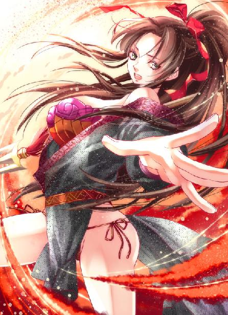
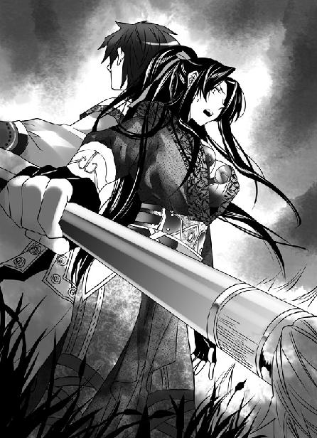
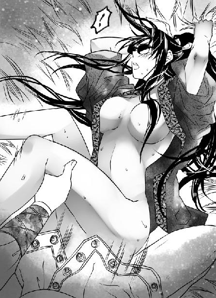

第30集·金针续命
江州篇（6/7）
出版日期：2012-01-05
【本集内容简介】
星月湖与宋军打得如火如荼之际，却有一支无比招摇的宣诏使船队浩浩荡荡驶来江州。
一群纨绔子弟出游似的来到江州，同时雪中送炭地带来可用人马。夏用和按兵不动的意图终于显露——宋国的工匠聚集军营，赶造各种攻城器械，连夜攻城！但水泥的坚固程度超乎预料，反倒是兽蛮士兵发挥奇效！
明知孟非卿有意栽培，程宗扬仍然拒绝在战场上立军功。对他而言，战场在别的地方！
※ ※ ※ ※ ※

封面人物：月霜

插图：月霜（1）

插图：月霜（2）
伴随着激越的战鼓声，选锋营的铁骑犹如夜色下的黑潮漫过战场。空旷的原野上，一座被铁丝网围起的战阵宛如小小的礁石将黑潮分开，两军碰撞的厮杀声随即响彻夜空。
战阵周围遍布着断枪组成的简易鹿角。露出地面尺许的枪锋一字向外倾斜，枪尖反射着寒冷的月光。
一名选锋营骑兵冲来，战马的铁蹄践开断枪，马上的骑兵手臂蓦然挥直，手中的短枪呼啸而出，将十几步外的一名佣兵刺毙当场。
铁丝网内一名穿着青黑色制服的军人闪身掠出，他的身体如箭矢般横飞，手中的长矛犹如怒蛟般贴地卷起，将战马的一条前腿击得粉碎。
战马嘶鸣着仆倒，庞大的躯体撞上散布的枪锋，大片大片的泥土伴着马匹的血光同时溅起。选锋营的骑手甩镫跃起，左臂举起圆盾，挡住对手的长矛。
就在这时，一抹刀光从夜色中飞出，狠狠斫在他的颈中，血光如匹练般飙起数尺。
选锋营的骑兵滚滚而来，无数铁蹄溅起尘土，蹄声震动天地，却没有人踏进大貂珰身周二十步的距离。
那个佩戴貂珰的锦衣人一手提着萧遥逸，一手握着蛇矛，鹰隼般的眼睛注视着萧遥逸颈中的纹身。
浸透血腥和火药味道的烟雾从包着银钉的鞍侧漫过，在弯曲如蛇的矛锋上缭绕变化，每一个细小的波动都令人心惊肉跳。
“萧刺史？”
大貂珰的声音略微阴沉，却没有太监那种刺耳的尖细，如果不是他的华服和光溜溜的下巴，几乎没有人能看出这个猛将般的壮汉竟然是一个太监。
刃在颈中，萧遥逸不改世家纨绔的嚣张本色，他一点也不客气地朝大貂珰脸上喷了口血，叫道：“死太监！敢不敢砍了我！有没有这个种！”
大貂珰脖颈微微一晃，避开鲜血，神情间看不出喜怒。
程宗扬肚子里禁不住大骂：死狐狸，你少说一句会变哑巴？都让人家生擒了还猖狂呢！真不怕死太监砍了你的脑袋当球踢？
程宗扬一边迅速聚集真气，一边脑筋转得飞快，想着怎么引死太监分神，好救下小狐狸。就在这时，他看到萧遥逸垂下的手掌在身后微微摇了摇，然后悄悄写了个“七”字。
程宗扬心跳险些漏了一拍。这死太监竟然是第七级归元境界的修为，整个六朝能达到这种修为也不过数十人，大多是坐镇一方、称王称霸的猛人。星月湖内部恐怕只有孟老大能和他一较长短，难怪死太监干掉石之隼就像砍瓜切菜一般容易。
但程宗扬已经是骑虎难下，九阳神功一经发动，真气便凝聚成光球，自己刚迈入第五级的修为还没那个本事把光球在经脉中释放掉。一不作、二不休，程宗扬索性又凝出一颗光球。小狐狸若被死太监干掉，自己这会儿掉头就跑也跑不过选锋营的马腿，还不如玩一把大的。
程宗扬丹田一团炽热，九阳神功凝聚的光球从腹下升起，沿手少阳经络汇入掌心。这是他踏入第五级坐照境后第一次动用九阳神功。
九阳神功极耗真气，按照自己以前的修为，凝聚出四个光球就差不多将体内的真气耗费一空，拼了老命也无法将第五颗光球凝聚成形。但现在不仅轻轻松松就能凝聚出五颗光球，气脉运行间也出现一丝奇异的变化，似乎每一颗光球都与自己的心念相连，不仅在体内控制自如，甚至自己感觉即使打出去也能控制它的方向和转速。
与此同时，另一种玄妙的感觉从经脉间升起。凝成光球的九阳真气在经脉间运行，带来火焚般的炙热感，比以前的热度增加十倍。如果是以前，不等九阳真气发出，自己的经脉就会炙痛难当。而现在，光球运行过后，却有一种清凉的气息丝丝升起，与太一经的感觉极为相似。
大貂珰并没有立即动手，他审视着萧遥逸，似乎在考虑着什么，良久才说道：“宋晋两国向来交好，值此时节，两国边境匪寇聚集，秦某奉吾主令旨，入境捕寇。萧刺史身为一方父母，保境安民有责，但千金之子，不坐垂堂，此番误入寇营，险些误伤，还须多加小心。”说着他放开萧遥逸，温言道：“请代秦某向萧侯问好。”
姓秦的大貂珰一边说，一边伸出手，似乎想帮萧遥逸拍拍身上的泥土。
程宗扬没想到死太监认出小狐狸的身份，竟然二话不说就把他放了！诧异间，看到他手掌拍出，掌下的景物微微变形，仿佛空气被压缩所造成的折射，竟然是带足了真气。
程宗扬顿时大叫不好，立即一掌挥出。
萧遥逸身后仿佛长了眼睛，双足一落地，身体便如卧在空中一样横飞起来，右手向后挥洒，五指如拨弦般弹出，逐一点在大貂珰掌心。
那个猛将般的太监一掌穿过指影，“砰”的一声按在萧遥逸的肩头。萧遥逸身体剧震，浑身骨骼都发出轻微的爆响，人在半空就狂喷一口鲜血，身体如柳絮般飘出丈许，仰面摔倒在地。
程宗扬顾不得查看小狐狸的死活，掌心蓦然涌出一团白光，狠狠击向大貂珰的腰腹。他已经进入第五级坐照的境界，这一击的威力较之当日与苏妲己交手时强出数倍，此时倾力使出，光团未至，大貂珰的锦服已经像被烈火烧炙般发黄。
大貂珰手掌泛起一层淡青的光泽，五指鹰爪般一紧，抓住那颗光球，掌中发出一阵炒豆般的脆响，将那团光球消弭于无形。
大貂珰举手破去九阳真气，眼中露出一丝光芒，“王哲是你的什么人？”
程宗扬也不答话，双掌一翻，两团光球同时脱掌飞出。
“年纪轻轻，九阳神功便有三重修为。”大貂珰挥掌击碎光球，冷冷说道：“你是韩庚，还是秋少君？”
“死太监！少废话！拿命来！”
暴喊声中，程宗扬又击出一团光球。大貂珰的鹰爪再次递出，抓向那团真气凝聚的光球。光球入手，大貂珰手掌忽然一震，那团光球竟然在掌中微移寸许。
九阳神功虽然精妙，但他五指满蕴真气，足以击灭这一道经脉凝聚的九阳真气，只是这光球入掌之后移出寸许，却成了全力攻其一指的局面，落点正在拇指。以大貂珰的修为，也难以一指之力与一道经脉凝出的九阳真气硬撼。拇指一旦受创，等于废去一只手掌。这年轻人的机变和修为还在自己预计之上。
大貂珰爪形变化，中指点出，锐利的指风刺穿光球，光球应指破灭，指骨也“咯”的一声折断。
他用一根手指的代价化去这股九阳真气，然后抬眼道：“九阳神功四重，以你的年纪可谓不俗。韩庚年纪比你长了许多，又传闻陨落塞外，想必你就是秋少君了。”
“秋小子有我这么帅吗！”程宗扬叫道：“死太监！看我的九阳神功第三十九重！”一团刺眼的白光亮起，比刚才的声威更加震撼。
九阳真气离掌之后，果然还能与自己心意相连，可惜自己修为不够，可以操控的距离不过尺许，饶是如此，也伤了大貂珰一指。方才看到大貂珰用肩膀硬挡徐永一矛，程宗扬还以为他有金钟罩、铁布衫之类的硬功夫，现在看，大貂珰只是用强横的修为强行压下伤势，不然自己也不可能击断他一指。
大貂珰眼中露出一丝难以索解的讶色。
九阳神功终究是太乙真宗的镇教神功，修习者以阳脉为引，将全身真气凝聚一处，威力在一瞬间达到顶峰。他破去这个年轻人的九阳真气看似轻松，实际上远没那么容易。而这个年轻人此番出手，那团光球不仅没有凝聚不散，反而以肉眼难以追踪的速度飞速扩大，这完全不是九阳神功发动的景象，但其中蕴藏的九阳真气强烈之极，让人无可怀疑。
大貂珰右手一振，蛇矛如闪电般击出，挑中那团九阳真气。
这年轻人显露出的修为虽然超过他的年龄，终究不过第五级坐照的境界，能修炼到九阳神功第五重已经是他的极限，只要破去这勉强成形的最后一击，这年轻人体内真气耗尽，不用自己出手，也无力再战。
令他诧异的是，那年轻人的右掌又爆出一团白光，狠狠拍在自己的左掌上。
“叮”的一声，大貂珰的蛇矛挑中第一团光球，矛尖刺中一块硬物，却是一粒小小的龙睛玉。
接着“砰”的一声巨响，他受伤的左掌与程宗扬硬拼一记，身影向后晃了一下，织锦的衣袖如蝙蝠般飞开，露出并不粗壮却坚如铁石的手臂。
程宗扬只觉自己就像一只狂奔的犀牛，一头撞在一道钢铸的城墙上，强大的反震力道使自己右臂一阵剧痛。但程宗扬清楚感觉到，自己的九阳真气破开了大貂珰这一爪，炽热的气息成功侵入他的经脉。
大貂珰身体重新挺得笔直，沉声道：“九阳神功，果然名不虚传。”
程宗扬左掌击出的九阳真气看似雄浑，其实只是一小团，不过里面包裹着一粒小小的龙睛玉。那粒龙睛玉由冯源施过术，一经激发立刻爆开。他真正的杀招则是右掌的第六颗光球。
大貂珰不得已仓促变招，不但没有击碎光球，反而被九阳真气侵入经脉，结果以弱对敌，一击之下，经脉便告负伤。
虽然上了这个年轻人的当，秦翰却毫不在意。两军对垒讲究兵不厌诈，何况生死相搏？
程宗扬一掌击出，体内的真气顿时耗尽。如果是平时，自己可能栽倒在地，爬都爬不起来。但此时战场上弥漫着浓烈的死气，等于在源源不绝地补充真阳，丹田一转便多了一丝真气。程宗扬看也不看就向后跃出，一把拽起萧遥逸朝阵中掠去。
程宗扬真阳充沛，第四级入微境时便能多凝出半颗光球，这时拼尽余力，先以左掌勉强成形的九阳真气诱敌，接着右掌痛下杀手，终于击伤了这位修为高自己两级的大貂珰。但能不能救下小狐狸和自己的小命，程宗扬没有半点把握。
提着萧遥逸刚掠出两丈，一股强大的气息便从背后袭来。程宗扬头皮发麻，不用看就知道那是死太监的蛇矛。只一个呼吸，死太监就压下伤势再度出手，这份修为真不是盖的。
眼看要被蛇矛追上，程宗扬抱住萧遥逸的腰往地上一滚，拼着被马蹄踩中的危险，从一匹战马腹下钻过，一边躲避大貂珰的蛇矛，一边拼命补充真气。
萧遥逸身体僵硬，口鼻气息皆无，连脉搏都已经断绝，但程宗扬知道他还没死——自己还没有感受到他的死气。不过若是被大貂珰的蛇矛刺中，自己和小狐狸就变成串在一根矛上的好兄弟了。
蛇矛卷起的狂飙越来越近，眼看弯曲的矛锋就要刺入背脊，忽然程宗扬奋力一掷，把萧遥逸抛到阵中，接着旋过身，“叮”的一声，手中多了一柄匕首，间不容发之际挑住蛇矛分叉的矛锋。
那柄匕首锋刃不过三寸长短，薄薄的刀身犹如冰玉，看起来摔到地上就会粉碎。然而大貂珰的丈八蛇矛击在上面，连火星也未溅出分毫，就这样硬生生被一柄薄刃挡住。
大貂珰的坐骑人立而起，丈八蛇矛在空中一闪，如雷霆般朝程宗扬击去。
那年轻人真气耗尽，已经是强弯之末。大貂珰可以放过萧侯的儿子、晋国的江州刺史，但对贼寇，尤其是星月湖岳贼的余孽，他不会有半点心慈手软。即使这年轻人大有可能是王哲的师弟、太乙真宗未来的掌教，自己也不会饶他性命。
程宗扬盯着蛇矛的寒芒，手中紧紧握住那柄珊瑚铁制成的匕首，所剩无几的真气贯入匕身。突然一股刺骨的寒气袭入体内，使他险些大叫出来。
这柄匕首不只一次救过自己的性命，但程宗扬头一次发现，这柄匕首中蕴藏着如此强烈的寒气，仿佛一道冰流浸入自己枯竭的经脉。
蛇矛在空中划过一道玄奥的曲线，仿佛带动天地般的气息般朝自己刺来。
程宗扬举臂封格，腕骨顿时剧痛，整条手臂宛如被大锤砸中，骨骼欲碎。他狼狈地跌坐在地，险些爬不起来。
程宗扬刚突破第五级坐照的境界，一开始还信心十足，觉得就算面对孟老大那种猛人也有一拼之力。但这位大貂珰好好给自己上了一课，面对这个身残志坚的死太监，自己连压箱底的功夫都使了出来，照样毫无还手之力。如果不是死太监用了大半力气对付小狐狸，自己可能连逃跑的机会都没有。
看到他手中的匕首，大貂珰眼中闪过一丝异样的光芒，蛇矛一拧，将珊瑚匕首从程宗扬手中夺下，顺势挑飞，然后一矛推向程宗扬的面门。
蛇矛劲风未至，锋芒上透出的青光已经把程宗扬的脸都映得绿了。
就在这时，一道乌光宛如天外飞来的蛟龙撞向蛇矛。空气仿佛被罡风撕碎般，发出一声爆裂的巨响，荡起一圈圈水波状的波纹。
大貂珰攻势一顿，贯满真气的蛇矛被同样贯满真气的天龙霸戟硬挫回去。
程宗扬提到嗓子眼儿里的心脏终于落回原处，孟老大来得真是时候！
孟非卿犹如一头雄狮般从黑暗中踏出，他抬手接住那柄珊瑚匕首，看也不看便抛到程宗扬身边，两眼紧盯着姓秦的太监，一边缓步走来，一边道：“十余年未见，大貂珰风采犹胜往昔。”
大貂珰将蛇矛横在鞍前，沉声道：“岳逆已然伏诛，吾主宽大为怀，饶过尔等性命，今日又敢作乱，以为我大宋无人吗？”
孟非卿身后传来两声哂笑，天驷侯玄催马过来，他一手拿着军帽，懒洋洋地扇着风，一边道：“你一个阉人，偏要粗着喉咙学男人说话。喂，先主当年割你一刀，你不会又长出来了吧？”
大貂珰道：“若非先主收秦某入宫，秦某早死于乱军之中。此恩此德，秦某不敢稍忘。”
侯玄冷笑道：“真是好奴才。”
大貂珰丝毫没有因为侯玄的刻薄言语动怒，他跳下马，一手提起蛇矛竖在身旁，扬声道：“孟非卿！你的天龙霸戟可敢与我一战！”
孟非卿眼中精光闪动，“大貂珰既然有兴致，孟某敢不奉陪。”
侯玄忽然笑道：“老大别急，秦太监是你的，但让我先玩一场。”
说着他随手扣上军帽，接着纵马跃出，玄武槊带着一股狂飙攻向大貂珰身后的亲卫。
侯玄擅长执锐破坚，但选锋营的亲兵都是身经百战、立下无数功勋的骁勇之士，放到其他军队当指挥使也足够了，何况里面还夹杂着不少兽蛮人。一名披着铁甲的兽蛮武士举斧劈出，斧槊相交，兽蛮武士浑身如黑熊般的鬃毛猛然竖起。两股巨力撞在一起，侯玄身下能够负重千斤的健马也不禁发出一声嘶鸣。看来用不了几招，这匹战马就要支撑不住。
侯玄飞身下马，玄武槊长击远攻，将那名兽蛮武士打得不住后退。
大貂珰一手执着蛇矛，被程宗扬击伤的经脉迅速恢复。孟非卿宽阔的肩背微微一动，像一头所向无敌的雄狮，擎出一对天龙霸戟。
程宗扬退到阵中，只见萧遥逸盘膝坐在地上，身后多了一个人，正是朱骅王韬。王韬双掌贴在他背后，护住他的心脉，萧遥逸双目紧闭，脸色一片惨白。
“怎么样？”
王韬简单说道：“性命无妨，但经脉断了数处。为我护法，我先设法护住他几道主脉。”
“行！”程宗扬用力抹了把脸，这才发现自己双手虎口震裂，血流满手。
选锋营的铁骑攻势越来越猛烈，战阵三面同时爆发激战，只留出西南方向的缺口。即使有星月湖的老兵在阵前厮杀，雪隼雇佣团的伤亡仍在迅速增加，不少佣兵在压力下已经往西南方向移动，试图突围。
程宗扬知道选锋营用的是围三阙一的经典作战法则，空出的一面其实是一个陷阱：一旦对手丧失斗志、转身逃跑，选锋营的铁骑就会像死神一样穷追不舍。一方逃命，一方追杀，很容易以最小的伤亡取得最大的战果。
但这种战法之所以经典，就是因为这样——你明知道对手的目的，却拿不出更好的应对方法。纵然所有人都知道空出的一面是一个陷阱，但处于绝境之中，同时几乎所有人都心存侥幸，觉得自己有机会在被选锋营的铁骑追上之前逃生。
程宗扬叫道：“星月湖大营主力已到！弟兄们！我星月湖在三川口以六百破七千、好水川三千破两万，眼下选锋营不过两千，星月湖大营主力一口便能把他们吃掉！所有参战的佣兵兄弟只要齐心协力杀回江州，每人五十金铢！我程宗扬说到做到！”
五十金铢相当于十万钱，那些视金铢为信仰的佣兵汉子一下子被这笔巨款挑起热血，狂吼着冲上前去，硬顶住了选锋营的攻势。
程宗扬紧张地盯着战局，一边不断下令，指挥众人进退，利用铁丝网和鹿角反复阻击敌军。忽然一队军士从侧面杀出，破开选锋营的黑潮冲进战阵。
被他派去联络孟非卿的苏骁这会儿浑身浴血，神情却依然冷静。他向程宗扬敬了个军礼，“出发时一百零一人，目前剩余三十九人。重伤员十七人，已经就地解散。”
就地解散是指自行突围，但重伤之下，想在乱军丛中杀回江州，可以想象难度有多大。程宗扬一阵心痛：这个连全是老兵，一战下来损失超过六成，比割了自己的肉还难受。
“其他人呢？”
“斯上校、卢中校和崔中校带着人马在后面。”苏骁道：“这一路都是定川寨的溃兵，那些宋军吓破了胆，一时半会儿不敢出来。麻烦的是选锋营，我军被一个营的兽蛮人挡住，卢中校正设法把他们引开，最多一刻钟便能赶到。”
难怪没有看到选锋营的大队兽蛮武士，原来是去拦截星月湖的主力了。听到星月湖大营的主力再一刻钟就能赶到，程宗扬放松下来，才发现背后湿漉漉的都是冷汗。他撕下一条布料，裹住受伤的虎口，低声道：“那个死太监是什么人？”
苏骁神情凝重地说道：“选锋营都指挥使秦翰。”
“不是都监？一个太监当什么主帅？”
苏骁脸上没有一丝笑容，低声道：“他是皇图天策府出来的。”
程宗扬对秦翰的名头不熟悉，民间知道的也不太多，但秦翰的大名在六朝军界却是如雷贯耳。
身为皇图天策府唯一一名太监学员，当时与他同级的少年听说自己要与一个阉人同学军事，没少痛骂那些教官趋炎附势。但第一年，这个死太监就拿了射柳第一、沙盘第一、格斗第一、策论第一……总之那一级的正常人最高名次就是第二。第二年，死太监又包揽了全部第一，第三年也是，第四年还是。到第五年大家都已经绝望的时候，死太监终于不是第一了——送他来上学的宋主死了，他要回去戴孝。
继位的宋主对这个不务正业的死太监也没多少好感，不久夏州叛乱，就把他踢出去当了监军。等到第六年同级的少年毕业，姓秦的死太监已经大大小小打了十余仗，身份也从监军打成直接领军的武将。
从那以后，只要宋国有战事，都少不了姓秦的死太监。无战不与、无战不胜，前后一百多仗，每战都身先士卒，单是受伤就有四十多次。
如果换作别人，这样的战绩早就被捧成百战百胜的军神，不过他一个身体残缺的阉人，有一点良知的文人士子都不肯替他吹嘘，那些肯替他吹嘘的，他又没给钱。因此军界之外，没有多少人知道宋国有个堪称猛将的死太监，更不知道他是皇图天策府出身。
但对于宋国朝廷来说，这个太监再讨厌，也是个很能打的太监。不计报酬、不辞辛苦，一道诏书下去，立刻出征。打完仗后，下道诏书安慰一下，随便给个荣衔，连赏钱都不用多给，比一般的将领还好用。
秦翰半个月前接到夏用和的告急书信，通知他当年岳逆的星月湖余孽重新聚集，紧接着朝廷的诏书和枢密院的调兵文书一道送来，口气一如既往的冷淡，似乎朝廷很不愿意让一个太监领兵，但看在先主的面子上，赏他一个立功的机会。
秦翰没有什么废话，随即出兵。他先从云水行至丹阳，再沿宋境南下，一路夜行日宿，没有惊动任何官府。
定川寨的烟花和火光被藏锋道人等人施法隔绝，金明寨一无所见。秦翰的选锋营从北而来，正看得清楚。两千名军士立即全速出动，赶在龙卫军全军崩溃前，给了星月湖致命的一击。
秦翰的丈八蛇矛与孟非卿的天龙霸戟战在一处，身边数丈范围内劲风如割。远远看去，只见黄沙飞舞，几乎看不到两人的身形。
侯玄仗槊深入宋军阵后，靠一人之力与选锋营的亲兵猛将缠斗，阻止他们攻入战阵。
铁丝网多处破损，如果不是刚才抓紧时间钉在地上，这会儿早已散架。程宗扬把苏骁带来的人手全部投入进去，拼命挡住选锋营的攻击。
这一刻钟的时间分外漫长，程宗扬几次都忍不住怀疑闹钟是不是坏了，竟然还没到时间。
忽然，远处传来一声高呼：“日出东方！”
战阵中残存的军士立刻振奋起来，齐声道：“唯我不败！”
选锋营的战鼓突然中止，接着响起金属敲击的声音。选锋营的铁骑如潮水般退却，还没有忘记抢走同伴的尸体。
阵中传来一声巨响，接着黄沙分开，孟非卿胸前被蛇矛划出尺许长一道，露出肌肉虬结的胸膛。秦翰头上的紫貂玉珰被天龙霸戟割碎，长发飞舞着，他手执蛇矛，昂然而立。
孟非卿把双戟收到背后，“多谢大貂珰指教。”
秦翰冷哼一声，拔起蛇矛，飞身跨上战马，朝火光漫天的定川寨驰去。
他与孟非卿的修为在伯仲之间，但刚才被程宗扬偷袭，经脉受创，再斗下去也难以讨好，况且星月湖大营主力已至，硬拼之下，胜负难料。
孟非卿也不敢久战。秦翰初来乍到，不知详情，只看到定川寨火起，以为宋军已经大溃才领兵后撤。如果金明寨的捧日军闻讯出动，与定川寨的龙卫军、秦翰的选锋营三面合击，星月湖大营兵力再多几倍也免不了全军覆没。
雪隼佣兵团的雇佣兵在途中遭遇兽蛮营，血战之下只剩半数生还，这时看到宋军后撤，都有种劫后余生的感觉，不少人手臂一软，丢了武器躺在满是鲜血的泥土上，大口大口喘着气。
除了卢景去引开选锋营的兽蛮武士未至，其余六骏已经合兵一处。萧遥逸重伤不醒，崔茂接替王韬继续为他疗伤。孟非卿下令由侯玄和斯明信各带一营断后，其余人马立即带上负伤的同伴返回江州。
敖润浓密的须髯几乎被鲜血黏住，他摘下铁弓，把石之隼的尸身背在背上，然后牵了匹龙卫军溃散时遗留的战马走过来。
“程头儿，”敖润双眼发红地说道：“石团长说过，他如果出了什么事，就要我们都听你的。”
程宗扬原以为石之隼在暗中窥视小紫，对他颇为忌惮，这时知道他的目标是梦娘，虽然心下还有些疑惑，敌意已经消散许多。可惜石之隼已死，他受谁委托来找梦娘，已经不得而知。
“跟我来吧。”程宗扬道：“雪隼团和星月湖，都是我的兄弟。”
※ ※ ※ ※ ※
回到江州已经是四更时分。程宗扬筋疲力尽，一回去就倒头大睡，直到第二天中午才睁开眼睛。
映入眼帘的先是一抹绿色。由于是冬季，几盆花草都放在室内避寒。小紫案上本来放了一株文竹，半尺多高，可一夜之间，这盆文竹就长出丈许，柔软的嫩枝攀住窗棂，顶端几乎触到房顶。窗台一盆吊兰更是枝叶繁茂，枝条一节节从窗口直拖到地上，几乎占满了半面墙。
程宗扬拍了拍脑袋。自己昨晚太累，结果吸收的死气变成真阳外溢，重演自己在大草原时的一幕。
小紫软绵绵倚在榻上，似笑非笑地看着他。程宗扬捏了捏她的鼻子，“怎么不喊醒我？”
“你睡得好熟呢。”小紫笑道：“那些文竹和吊兰一节一节地长，看起来真好玩。”
程宗扬探了探丹田，自己吸收的死气还剩下三分之一，其余都已经流失。不过反正都是捡的，他也没有什么心痛的。
程宗扬坏笑道：“这你可吃亏了。如果你用嘴巴给我爽一下，这些真阳都是你的，修为至少升个一大截。”
小紫笑眯眯道：“那样好麻烦。”她拿出一根中空的银针，“只要把它从你的下面插进去，刺进丹田，一下子就能把真阳吸干净。要不要试一下？”
看着尖锐的针头，程宗扬禁不住地打了个哆嗦，半晌才叫道：“死丫头，你也太毒辣了吧！”
说着程宗扬一把抱住小紫，狠狠把她压到身下。小紫却没有躲闪，而是低叫一声，声音里充满柔媚的韵致，一边故意抬起娇躯，在他身上摩擦。
虽然隔着衣物，程宗扬还是一下子呆住，被她的媚态勾引得险些流出鼻血。
趁程宗扬发愣的时候，小紫咯咯一笑，从他身下钻出，“大笨瓜，醒了就赶紧练功吧，不然什么都没有了。”
程宗扬恼道：“死丫头，把我弄硬了就拍拍屁股走人。小心我一会儿走火入魔，还要用你的小嘴泄火。”
“好啊。记得叫我啊。”小紫笑着晃了晃银针，然后掩门出去。
程宗扬悻悻盘起腿，用了一个时辰把残余的死气炼成真元。昨晚真阳外溢也不是没有好处，身上的伤口已经愈合，两手的虎口恢复如初，几乎看不出受伤的痕迹。
丹田的气轮旋转起来，真气丝丝缠缕散入经脉。程宗扬发现，这次真气耗尽之后，气海的容量似乎大了许多。转化完最后一缕死气，程宗扬拔出珊瑚匕首，试着将真气送入其中。
一股寒意从匕首中涌出，流入经脉。那种感觉与真气相似，仿佛匕首中蕴藏着惊人的力量，但流过经脉之后，并没有留下丝毫痕迹，似乎自己缺少些什么，无法吸收里面的力量。
程宗扬盘腿想了半晌。此前自己也常用这柄珊瑚铁制成的匕首对敌，但从没感受到这股寒意，难道是修为进入第五级坐照的境界才能够感应？匕首里的寒意到底是什么东西？能不能为自己所用？
说到底，自己对珊瑚铁并没有多少了解。在建康时，自己虽然买了不少书，但都是市面上常见的大路货。像这种声名显赫，却极少有人知道用处的东西，也许一些大宗门的典籍里才有记载。
程宗扬脑中一亮：说到典籍，自己身边也有啊。他扬声道：“卓贱人！”
房门微微一响，进来的却是梦娘。程宗扬有些奇怪，“卓贱人呢？”
梦娘摇了摇头，然后道：“主人说，老爷如果有事，就让奴婢过来。”
“死丫头又搞什么鬼主意？”
程宗扬收起珊瑚匕首，一边打量了梦娘几眼。自己吸收过死气之后需要发泄一下，可死丫头叫梦娘过来干嘛？
程宗扬朝梦娘招了招手。梦娘顺从地屈下膝，跪坐在他身边。程宗扬盘膝坐在地上，一手揽住她的腰，一手从她襟领间伸进去，握住她胸前那团丰腻饱满的美肉。
梦娘就像平常一样，安静地任他抚摸。
程宗扬心里叹了口气：这么一个绝色美人儿，却是看得吃不得，想起来就憋闷得慌。
程宗扬打起精神，“死丫头让你过来做什么？”
梦娘道：“主人说，请你去看看一个叫小狐狸的人。如果你摸阿梦的身子，就对你说：小狐狸快死了。”
程宗扬怔了一下，然后叫道：“什么！”
※ ※ ※ ※ ※
程宗扬风一样冲进大帐，只见孟非卿、侯玄、斯明信、卢景、崔茂、王韬诸人都在，一个个眉头紧锁、脸色阴沉，却没看到萧遥逸的身影，只有一床被衾整整齐齐铺在地上。
程宗扬大叫一声：“小狐狸！”一把揭开被子，下面空荡荡没有半个人影。
程宗扬心头像被人用钝刀狠狠地割了一下。谢艺死时，自己也在旁边，但自己与萧遥逸相处那么久，交情的深厚还要超过当日与谢艺的交往。小狐狸就这么被死太监一掌打死，连临死前的最后一面都没见到，程宗扬顿时有种折断手足的痛楚。
“谁叫我？”帐后的帷幕一动，萧遥逸从里面钻了出来。
程宗扬眼珠险些掉在地上。这家伙居然一件衣服都没有穿，就那么光着屁股露着鸟，一脸神气活现地走了过来。
程宗扬鼻中的酸意还没退去，禁不住笑骂道：“干！你这个死狐狸，我还以为你死了呢！”
“少咒我！撒泡尿都不让人安生。大冬天脱这么干净挨扎，我容易嘛我？”
萧遥逸虽然在笑，脸色的苍白却掩也掩不住。他趾高气昂地走了几步，然后毫无征兆地一头栽倒。
侯玄一把接住他，吼了一句：“就你尿多！”然后黑着脸把他扔到被褥上。
“你以为我想啊？我不是肾经受创，憋不住尿吗？”萧遥逸嘀咕着趴好，露出背上密密麻麻的银针。
侯玄盘膝坐下，深吸一口气，然后敛息凝神，双手轮番捻过银针，将真气一缕缕渡过去。
萧遥逸趴在被褥上，嘴巴还不闲着，“死太监本来就没想要我死，不过他下手可真狠，直接把我的修为清了。我干他上八代加下八代！我练了二十多年，我容易嘛我！他还不如一掌拍死我呢。”
卢景翻了翻白眼，“他若是拍死你，江州之围也解了。”
萧遥逸叫嚣道：“我送他两个蛋，他也没这个种！”
崔茂朝他脑袋上拍了一把，“闭嘴吧你！”
来的路上，程宗扬已经想明白了。一是萧侯，二是江州刺史的头衔救了小狐狸的命。他身为晋国官员，宋军越境剿匪，再怎么说也不能把晋国的地方官给剿了。
何况萧遥逸还是世家出身，有名的兰陵萧氏，看样子秦翰与萧侯也有些交情。如果宋国官军把他干掉，王茂弘再装聋作哑，也只能在朝野的压力下出兵，与宋军对阵。这么看，姓秦的死太监也是心思缜密的人。
侯玄额头冒出丝丝白气，一盏茶时间之后，他松开手，一缕指风点在萧遥逸脑后。萧遥逸精神一振，苍白的脸孔浮现出血色，手脚的力气一恢复，立刻就想爬起来。
孟非卿虎目一瞪，“趴着！”
萧遥逸天不怕地不怕，就怕孟非卿。老大一开口，只好乖乖趴下。孟非卿把一颗药丸塞到他口里，“含着！”
萧遥逸呜呜囔囔地说道：“咽了不就得了，还含着……”
孟非卿沉着脸道：“含着是让你少说两句！”
萧遥逸哼叽道：“我就当自己是哑巴得了……”
“秦翰虽然没有伤他性命，这一掌却让他八脉齐断，丹田也受了重创。”孟非卿道：“这金针续命一共一百零八针，我们六人联手施展一遍，大概能维持一个月。”
程宗扬皱起眉，“意思是下个月还要给小狐狸扎这么多针？”
孟非卿点了点头。
侯玄行针只一盏茶工夫，此时额头已微微见汗，看起来比他单骑破阵还耗精力。王韬第一个出手救治，这会儿脸色发青，盘膝坐在一旁，闭目调息。
程宗扬忍不住道：“这针法是不是每用一次都要大耗真元？”
“不错。”孟非卿道：“如果一人出手，一百零八针用完，要耗去一半真元。好在我们六兄弟都在此地，六人联手，这点修为还损耗得起。”
“这死太监！也太狠了吧！”
秦翰这一掌虽然没有要小狐狸的命，可不但废掉星月湖八骏之一，还把其他六人都牵制住。要护住萧遥逸不变成废人，就必须大耗真元，但星月湖强敌环伺，众人修为不进反退，又被困在江州，迟早要被一网打尽。
“这样不妥！”程宗扬道：“不用打，咱们就耗死了。死狐狸，你先塞住耳朵。”
萧遥逸咬着药丸，含含糊糊道：“干嘛啊？”
程宗扬也不跟他废话，抓住他脑袋，把他耳朵堵上，然后抬起头，“小狐狸这伤有没有得治？”
众人神情凝重，都没有作声。
程宗扬出主意道：“光明观堂擅长医术，能不能请她们看看？”
六人同时摇头，“绝不能让光明观堂的贱人知道此事！”
星月湖诸人对光明观堂的戒心根深蒂固，况且萧遥逸身为第八骏玄骐的事一直没有曝光，诸人谨慎也在情理之中。程宗扬只好退而求其次，“我在南荒认识一个人，虽然和岳帅有些过节，但和我还有点交情。”
孟非卿道：“你是说鸩羽殇侯？”
程宗扬还没开口，卢景就说道：“不妥。”
斯明信阴沉着脸默不作声，此时开口道：“我去一趟太泉古阵。”
“赤阳圣果？”侯玄道：“还是我去，我的修为多少比你强一点吧。”
卢景怪眼一翻，“你能离得了江州吗？还是我去！”
崔茂道：“太泉古阵我去过一趟，比你们熟，我去最合适。”
王韬呼出一口浊气，开口道：“赤阳圣果据说长在火山口，我的焚天斧不惧火焰，还是我去。”
程宗扬听得一头雾水，“为什么要去太泉古阵？”
孟非卿道：“小狐狸丹田受创，一般药物即使能保住性命也保不了他的修为。光明观堂和黑魔海的殇侯，我们都信不过，但要为他续脉复元，也不是没有法子。据说太泉古阵有一种赤阳圣果能重聚丹田、恢复真元，我们去碰碰运气。”
程宗扬立刻举起手臂，“我正好要去一趟太泉古阵，大伙儿说说那东西长什么样子，我顺路把它采了。”
侯玄皱起眉头，“你要去太泉古阵？”
“是师帅的遗命，要我去太泉古阵一趟，找一块红色的大石头。”
王哲要自己把九阳神功修到六阳再去太泉古阵，现在自己已经是第五级坐照的修为，虽然第六阳凝出的光球小了一点，好歹也算一个。恐怕王哲吩咐自己的时候，也没想到自己的进境这么快吧。
程宗扬提出由自己前往太泉古阵，一向行事决断的孟非卿却没有作声。
沉默中，萧遥逸叫道：“喂，诸位老大！还得多久啊？天气很冷，我这么光着屁股，很容易着凉啊。”
侯玄道：“再等两分钟。督脉接通就行了。”
萧遥逸瞧瞧众人，“喂，你们别蒙我啊，我刚才听到你们几个在说太泉古阵——是不是跟我有关系？”
程宗扬道：“跟你有个屁关系，好好养你的伤吧。”
萧遥逸少见地严肃起来，他盘膝坐起身，认真道：“我虽然被死太监打了一掌，但至少在这儿没人敢要我的命。江州之事方起，我们八个谁都少不了。如果人手不足导致城破，就是找到赤阳圣果也没有半点用处。孟上校，我建议：江州解围之后再讨论此事。”
侯玄道：“金针续命最多护你半年。”
萧遥逸嘻笑道：“我能撑半年，外面的宋军能撑两个月吗？”
孟非卿道：“就这样定了。先解围再论。”
臧修大步进来，“报告！城北传讯，有船只沿江过来，要求入城。看旗号是建康来的官船。”
“朝廷有诏书？”萧遥逸第一个反应过来，“我和程兄一起去看看！”
※ ※ ※ ※ ※
江州城的西门是水门，两座水泥堡垒像巨兽一样守着近十丈宽的水路，城门是两道数丈高的铁栅栏。宋军没有水师，这些天连试探性的攻击都没有。江州同样也没有水师，但隔江相望的宁州却有着晋国曾经最精锐的水军。因此宋军围城月余，始终没有试图截断江州的水路。
一艘三层的楼船驰入城门，后面还跟着几艘中型船舶。楼船的桅杆上悬着晋国的旗号，众人在码头上就能听到船上的丝竹鼓乐。程宗扬与萧遥逸相视苦笑，晋国贵族奢靡享乐的作风真是到哪儿都改不了。
虽然明白人都知道星月湖是一窝反贼，占了江州没安什么好心，但大家现在背靠着晋国的大树，面子工夫不得不做。算起来，星月湖众人只有萧遥逸和程宗扬能见得光，这会儿再不情愿，也只能一脸毕恭毕敬地在码头恭候。
船只靠上码头，接着放下一具镶金嵌玉的舷梯。程宗扬看得直咧嘴：这是哪家少爷当了宣诏使？连梯子都搞这么华丽。
船上露出一个胖乎乎的脑袋，程宗扬一愣，还没来得及开口就听到一声朗笑，一个华服男子出现在船头，招手道：“小侯爷！程兄！别来无恙！”
萧遥逸穿着厚厚的貂裘，刚才还一脸严肃的表情，立刻变得玩世不恭起来，“我以为是谁呢，摆这么大架势，差点一个头就磕下去了。我若真磕了，你们这一船人还不得挨个给我和程兄还礼？”
张少煌笑骂道：“哥儿几个千里迢迢来看你，你这小子就没好话！”
程宗扬也笑道：“我刚才看见石胖子了，这会儿又躲哪儿了？”
“这儿！这儿！”石超被几名美婢扶着，气喘吁吁地从船楼下来，远远就拱手作揖，“程兄！小侯爷！可有日子没见了！”
说话间，船中又出来一群贵公子，为首的便是谢无奕和桓歆，接着是庾彬、袁成子、阮宣子、柳介之……一干人笑嘻嘻地出来，正是当日在鹰愁峪结义的世家子弟。
程宗扬啼笑皆非。一边是兵危战凶，宋军随时可能攻城；一边是晋国这些涂脂抹粉的世家公子，一个个美婢环绕、香囊随身，让人看见还以为是一群豪门恶少来出游的。
张少煌亲热地搂住萧遥逸的肩膀，“萧哥儿！你不在建康，这个年都过得没滋没味。这不，我们几个一商量，都来江州找你热闹来了。”
桓歆道：“张侯爷，在建康你可说得嘴响，‘小侯爷不辞而别，根本没把我们这些兄弟放在眼里，到江州非要好好削他一顿不可’，怎么见面就这么热络呢？”
张少煌道：“热络归热络，该削还得削！阮哥儿！把带的酒都搬下来！看我今晚怎么淹死他！”
萧遥逸道：“十个金铢以下的酒我可不喝！”
张少煌道：“鼻子够灵啊。玉泉酿！我带了一百来坛！喝完正好过了正月，哥儿几个拍拍屁股走人，留你在江州喝风。”
石超扯住程宗扬道：“程哥！我可想死你了！这几个月你不在，金钱豹我都没心思去。”
程宗扬佯怒道：“好你个石胖子，除了金钱豹，我就没别的能耐了是吧？”
石超连忙道：“我说错了！说错了！程哥，你千万别见怪！”
程宗扬大笑道：“你去金钱豹还记着我，这交情还不够深？行了石胖子，这船是你的吧？”
“对对对。因为要走远路，不敢用湖船。”石超讪讪道：“这船到底简陋了些。”
“这还简陋？你们石家干脆用金子打艘船得了。”
正说话间，船上有人叫道：“程头儿！”
程宗扬抬眼看去，眼睛顿时一亮，“吴大刀！你怎么来了！”
那些世家公子下个舷梯都得半炷香工夫，吴战威在后面等得不耐烦，索性从船上跃下，嚷道：“程头儿！你不能把我一个人扔家里啊！”
程宗扬当胸擂了吴战威一拳，“嫂子都有了还跑出来，像个当爹的吗？”
吴战威龇牙咧嘴地说道：“程头儿，你手上力气见长啊！祁老四、彪子、老吴都出来了，就我一个人守着婆娘，想想都臊得慌。我婆娘说了，生孩子是女人的事，我一个老爷们儿守着也没用，左右还有得等，就把我打发出来了。头儿，你放心，建康那边有云三爷，误不了事。”
程宗扬手边正缺人，吴战威赶来正解了燃眉之急，“家里的事晚些再说，我先打发了这些爷。”
“成！”吴战威道：“后面有艘船是云三爷指名给公子的，我先去交接。”
码头上一片热闹，一群世家子弟说笑斗嘴，周围几十名婢女服侍，还有上百名奴仆如流水般从船上搬下各种物品，再往后几艘大船都是各家的护卫，一个个背弓佩刀、架鹰走马，奔忙得不亦乐乎。
这群纨绔若让城里的军士、佣兵看见不是什么好事。程宗扬让人立即打开几间关门的客栈，给众人安排落脚的地方。打扫客栈还要一段时间，总不能让一帮世家公子都在码头上喝风，程宗扬干脆让人去知会兰姑一声，把水香楼包下来给众人接风。
正一件一件交代事情，忽然一个声音委屈地说道：“公子……”
程宗扬回过头，只见一个雪肤花貌的少女立在自己身后，眼圈微红，似乎要哭出来一样。
程宗扬一拍额头，“雁儿！你怎么来了！”
“吴执事要来见公子，奴婢求了柳姐才一道来的……”
她说的吴执事就是吴战威。自己手边几个得力人，祁远是当仁不让的管家，其余几个都给了执事的名头，出去也有些身份。眼看小丫头眼泪就要掉下来，程宗扬连忙道：“别哭！紫姑娘也在，我让人带你回家里去。”说着他压低声音，“既然来了，你就别想跑！乖乖在家等着，今晚老爷要收用你！”
果然，雁儿破涕为笑，红着脸朝主人福了一福，先去了客栈。
程宗扬在肚子里叹了口气。像雁儿这样美貌的少女，换到自己的时代，起码有几十个人打破头在追。可在这里，出身寒门的美貌女子，最好的归宿也不过是进到大户人家当个妾婢。若是嫁到寒门，她们的美貌带来的往往不是幸运，而是灾难。
“程兄！”张少煌用力一拍程宗扬的肩膀，露出一个大大的笑容。
程宗扬看到那些世家子弟都围着萧遥逸说笑打屁，稍微移了两步，低笑道：“张侯来江州，不会光是找小侯爷喝酒的吧？”
张少煌一笑，“有公有私。”
“公事？你不会真是奉诏来的吧？”
“的确是奉诏，要不哪儿来的官旗？”张少煌道：“不过是路过江州。”
“你是去宁州见萧侯？”
“不是。”张少煌缓缓道：“临安。”
程宗扬一怔，“不是吧？”
张少煌悠然道：“王丞相给我派了个活儿，让我出使宋国。我一想，去宋国肯定会路过江州，于是就跟大伙说了，弟兄们一听都吵着要来。这不，连从没出过建康的石胖子都跟来了。”
“王茂弘让你出使临安，是有什么事吗？”
张少煌露出一个大有深意的笑容，“五月二十日是宋国的千秋节，王丞相派我去给宋主贺寿，别的什么都没说。”
“五月二十？还有足足五个月，用得着这么早走吗？”
“可不是嘛。”张少煌道：“所以我打算在江州歇一个月，二月底再走。”
程宗扬笑道：“难怪带这么多护卫，这一路现在可不大太平。你们几家合起来，怕有千余人了吧。”
“一千五。除了奴仆就是各家的部曲。”
部曲和奴仆完全可以当私兵来用，就是死了，别人也管不着。听张少煌的这番话，看来对江州的局势十分清楚。
程宗扬想了一会儿，到底还是看不透王茂弘的态度。
“王丞相、谢太傅他们都没什么话要对小侯爷说的吗？”
“还用他说吗？说出来就麻烦了。我们来江州，只是兄弟间来往，谁能挑出个‘不’字来？”
不多时传来消息，水香楼和客栈都已经安排停当。程宗扬与一帮人笑闹着离开码头，赶往水香楼。
兰姑打扮得花枝招展，在院外迎候。谢无奕熟络地过去拥住兰姑，在她脸上香了一口，笑道：“我说这些天没见到兰姑，原来也来了江州。”
兰姑在建康的时间不长，与这些世家子弟却厮混熟了，来的这些倒有一大半都是她的入幕之宾。她笑着推了谢无奕一记，引众人入内。
楼内已经安排了席面，虽然不及建康丰盛，但也别具风味。张少煌吩咐把带来的酒摆上，一行人便入席欢饮起来。
萧遥逸刚才还像半个死人一样，这会儿又生龙活虎，不管谁敬酒都来者不拒，又换了大觥与众人对饮，丝毫看不出身上有伤。
程宗扬看了都觉得不安，趁着斟酒的工夫低声道：“怎么样？不如你装醉，我替你挡了吧。”
萧遥逸低笑道：“死不了。”说着他举起酒觞，“张侯爷！我敬你一杯！”
张少煌等人根本看不出萧遥逸的异样，当即举觞饮尽，换来一片喝彩声。
程宗扬让人把萧五叫来，然后起身道：“各位兄弟远来是客，小弟忝为半个东道主，敬各位兄弟一杯！谢兄，请！”
谢无奕当日被泉玉姬打掉两颗门牙，这会儿还没镶上，照样谈笑自若、举止洒脱，一点都不妨碍他的名士派头。
谢无奕先与程宗扬对饮一杯，然后才笑道：“咱们来江州，萧哥儿是东道主没错，小子你怎么也变成了半个东道主？”
兰姑在他怀中笑道：“谢爷不知，这水香楼可是程爷的产业。”
谢无奕大笑道：“难怪！难怪！我自罚一杯！”说着斟了酒，爽快地一口饮干。
桓歆叫道：“程兄！咱们饮一个！”
程宗扬有心替小狐狸挡酒，当下酒到杯干，与诸人一一饮过。
众人数个月没有与萧遥逸聚过，兴致极高，五斤一坛的玉泉酿不多时便饮了四五坛，众人多少有了些酒意。
萧遥逸接的酒有一半都由程宗扬挡了，另外一半由萧五在他身后不动声色地喝了大半，因此虽然受了伤，还能撑得住。他摇着折扇笑道：“江州地方小，没什么好玩的。眼下又是冬天，猎物都掉了膘，射猎也没什么意思。算来还是张侯爷带的玉泉酿不错，这几天咱们就把它喝完得了。张侯爷，再来一杯？”
张少煌一手覆住杯口，笑道：“行了，萧哥儿，在座的都是自家兄弟，你也不用瞒我们。这会儿城外还有十万宋军吧？”
萧遥逸笑嘻嘻道：“真让你猜着了。”
桓歆道：“来的时候，我们哥儿几个还说，就江州这破城，指不定早就被踩平了，没想到还能撑到现在。”说着他挑起眉，“王茂弘那老糊涂，看着宋军来我们晋国撒野，也不吱声。这次就让他见识见识我们兄弟的手段！”
程宗扬仔细看去，张少煌多半心里有数，石超是纯粹来凑热闹的。桓歆等人则是在建康横行惯了，一向好勇斗狠，这次来江州，一半是兄弟交情，一半也是想建功立业。至于谢无奕和阮家兄弟，倒也不想建功立业，只不过把打仗看得和射猎差不多，左右是带着家仆来江州玩一趟，死几个人也无所谓。总之，这些世家公子都是没上过战场的雏鸟，视打仗如儿戏。
这些公子爷虽然派不上用场，他们带来的护卫、部曲却是雪中送炭。星月湖与宋军连番恶战，虽然打的都是胜仗，但杀敌一万、自伤八千，算上受伤暂时不能重上战场的，星月湖大营减员将近一半。加上昨晚与选锋营的一场遭遇战，五百多名雇佣兵出城，回城的不到百人。宋军一旦大举攻城，剩下的兵力免不了捉襟见肘。多了这一千五百人，守住城池的希望就大了一分。
“今天不谈打仗的事！兄弟们先喝个痛快！”萧遥逸持杯长吟道：“醉卧疆场君莫笑，古来征战几人回！喝！”
“说的好！”众人欢呼痛饮，席间觥筹交错，热闹非凡。
论起豪饮之辈，萧遥逸、张少煌等人都比不上阮家兄弟。两人喝到酣处，索性让人取来铜盆，将酒倒入盆中，埋头痛饮。虽然玉泉酿算不上烈酒，但这种喝法还是让程宗扬看得咋舌，不知道云家大小姐云丹琉跟他们比，谁比较厉害？
石超酒量不宏，被桓歆扯着耳朵硬灌了几觥，便喝得眼花耳热。谢无奕去了冠巾，披头散发，张着腿箕坐席间，兰姑偎在他怀中，拿口含了酒，嘴对嘴地喂他喝。另外几名世家子弟各自抱着美婢和水香楼的妓女粉头，调笑取乐。
水香楼的娼妓平常都是与佣兵做生意，论起歌舞丝竹，远不及建康的名妓，有人怂恿道：“石胖子！让你的家妓来唱一曲。”
石超道：“正好我新……新得了几件衣裳，让……让程哥看看！”说着他醉醺醺地摆了摆手。
※ ※ ※ ※ ※
石超身后四名穿着狐裘的美貌姬妾款款走到席间，皓腕轻舒，分开狐裘，然后各自从衣间伸出一条美腿。厅中的歌舞停了下来，几乎所有人的目光都落在那几名美姬的腿上。
那四名美姬的大腿白皙圆润、丰秾合度，都是难得一见的美腿。但奇特的是，她们腿上都裹着一层浅白色的织物。那织物轻薄透明，紧紧贴着肌肤，整条美腿愈发光滑细腻，就像艺术品一样精美绝伦，此时微微抬起，在灯光下泛着淡淡的光泽，更显得修长如玉，看得人眼花缭乱。
程宗扬还没开口就有人叫道：“霓龙丝衣！石胖子，你从哪儿买来的？”
“这就是霓龙丝衣？传言十个金铢一双的？”
“果然是巧夺天工！”
“十个金铢也未必能买得到！”谢无奕放开兰姑，打量着那几名美姬，“如今建康顶尖的名妓，哪个没有一件霓龙丝衣，就不敢称红牌！石胖子，难得你一买就是四双。”
在场的男人啧啧赞叹，女人则露出嫉羡的眼神。石超大觉脸上有光，掩饰不住地流露出几分得意，“我花重金才买了这么几双。去，让大伙儿看仔细些！”
程宗扬禁不住想大笑，他一眼便看出这是自家织的霓龙丝袜。没想到数个月不见，柳翠烟把生意做得这么红火，一双袜子竟然卖出十个金铢的高价还供不应求。他笑嘻嘻地朝兰姑看了一眼，从青楼名妓入手，打下霓龙丝衣的名头，多半是她的主意。
几名美姬裸着美腿俏生生走过来，让在座的公子观赏她们穿着霓龙丝衣的美态。那些丝袜又薄又透，充满弹性的菲薄细丝紧贴着肉体，光洁无比，将肌肤的白嫩和腿部柔美的曲线展现得淋漓尽致。
在黄嬷嬷的指点下，成品的霓龙丝袜更加精美，如果不是腿后那条细细的袜线，几乎与自己带来的丝袜一模一样。
石超沾沾自喜地说道：“程哥，还看得过去吧？花了我足足一百金铢。”
程宗扬笑骂道：“一百金铢买四双袜子，你真是有钱没处花了。”
“这样的好东西，有钱也不一定能买到。”
萧遥逸也啧啧称奇，笑道：“石胖子，给小爷也买一双，穿过的我可不要！”
石超立刻苦起脸来，“小侯爷，这霓龙丝是雌龙出水时的霓霞所化，本来就没有多少，我好不容易买了这几双，再买可得碰运气了。”
程宗扬捅了捅萧遥逸，“你买这干嘛？”
萧遥逸低声道：“月姑娘腿那么长，穿上这种霓龙丝衣是不是很好看？”
程宗扬唇角抽搐了一下。让月霜穿丝袜？真是个好主意。虽然觉得石胖子花一百金铢买四双袜子的举动豪奢得过分，但能为自家东西做广告，程宗扬也不含糊，接口道：“一百金铢一双，给我也订一件！”
桓歆道：“程哥儿好豪情！一百金铢足够买个美姬了。石胖子，给我也来一双！”
四名石府姬妾的丝袜美腿令众人大开眼界，众人情绪愈发高涨。颇有几个人向石超打听在哪儿买的霓龙丝衣，一番酒劝下来，石超已经喝得面红耳赤。
忽然旁边一阵大笑，却是阮家的老二阮宣子喝得大醉，扯着桓歆要和他拼酒。
桓歆道：“石胖子号称酒量第一，你找他去！”
阮宣子拽住石超，“胖子！我……我跟你拼酒！”
张少煌在旁边起哄，拿了两只大觥斟满，“一人一杯！喝不完算输！”
阮宣子叫道：“好！胖子！我跟你喝！”
桓歆道：“干喝有什么意思？不如赌个彩头！石胖子，你若输了，就把身边的美姬送给阮老二，成不成！”
石超道：“我……我输了……不能再喝了……”
“真没用！哥哥帮你一把！”
桓歆捏住石超的鼻子，把酒灌到他嘴里。阮宣子虽然站都站不稳了，但捧起大觥像酒虫一样一口气喝完，然后“咣”地扔在案上。这边石超“哇”的一口吐出来，桓歆一松手，他就像烂泥一样歪到一边。
桓歆大笑着扯住石超身边一名美姬，推到阮宣子怀里。阮宣子喝得烂醉，一见到美姬的霓龙丝衣却性欲勃发，抱着她一双美腿贴在脸上。那美婢惊叫着去拽自己的主人，石超却醉得连抬手的力气都没有了。
几名恶少嘻笑着将那美姬按在席间，直剥得白羊一般，光溜溜只剩下一双透薄丝袜，肆意把玩。阮宣子拿出一只玉盏，将里面细砂般的药物合着冷酒服了，然后敞开衣服压在美姬背上，周围一群人连声叫好。
萧遥逸微笑道：“五石散。阮老二一会儿干完，还要裸奔行散。”
“这就是五石散？怎么看着像春药似的？”
萧遥逸大笑道：“正是！看吧，那几个也该服散了。”
程宗扬一脸苦笑。阮家兄弟一喝醉，什么事都干得出来。这倒不是欺负石胖子，他们自家的姬妾拿出来宴客也是常事。在他们眼中，这些婢女和工具差不多，干了就干了，石超不见得真会介意。何况豪饮、服散，都是这些世家子弟的风雅事。
萧遥逸与几个世家子弟勾肩搭背地说笑。程宗扬看了看，谢无奕正搂着楼里一个粉头亲热，兰姑则和柳介之缠绵着，于是向萧五使了个眼色，让他照看好萧遥逸，自己悄悄起身，去了楼下的一个房间。
※ ※ ※ ※ ※
吴战威正在房内等候，见到程宗扬立刻站起来，“程头儿。”
程宗扬喝了口茶水压下酒意，然后拂衣坐下，“先说船上的货物。”
吴战威道：“云氏的船上都是弓箭和盾牌。清单上一共有盾八百张，弓两百张，箭矢两万支，都是上好的点钢箭。因为都是违禁的兵器，怕路上被查到，才随着这批船一同运来。”
程宗扬听得极认真，“龙鳞盾？”
吴战威道：“没错，是龙鳞盾，一共做出来不到九百张。龙雕弓数量更少，云三爷让都送来了。”
程宗扬呼了口气。八百张龙鳞盾、两百龙雕弓，数量虽然不多，但对星月湖大营的军士来说犹如猛虎添翼，即使面对宋军的神臂弓也有一搏之力。
张少煌等人的笑闹嘈杂声不断传来，吴战威道：“我这次还带了一万金铢。”
“一万金铢？你不会把家底都带来了吧？”
在建康时，自己与萧遥逸合演连环计，从苏妲己手里敲了一万五千金铢的现款，但当初买秦淮河畔的土地，从云家借了两万金铢，算来一直都是负债经营。
“账上的事我说不清楚，”吴战威嘿嘿一乐，从怀里摸出一卷册子，“我婆娘抄了份账本，让我捎来。”
还是柳翠烟细心。程宗扬接过账本，大致浏览了一下。家中的开销并不大，除了临江楼盖房子和盛银织坊工匠的工钱，其他没有多少开支。当初的三个作坊，铜器坊转给了云家，石灰坊的水泥本来是摇钱树，但由于江州战事，城防用量极大，并没有多少可以贩卖。
“一百多件霓龙丝衣就卖了两千金铢？”虽然已经有了心理准备，但看到这个数额，程宗扬还是大吃一惊，半晌才道：“嫂子比我还黑啊！”
“可不是嘛！一枚金铢两贯铜铢呢，足够平常人家几个月的开销，偏偏有人肯买。”吴战威纳闷地说道：“那东西挡不得寒，又遮不住羞，穿着除了光溜一点儿，有啥好的？”
程宗扬笑眯眯道：“吴大刀，是嫂子穿给你看了吧？”
吴战威的黑脸顿时一红，吭哧几声道：“我就是看个新鲜……”
程宗扬大笑道：“你这个不解风情的糙汉！嫂子这叫俏媚眼做给瞎子看了。”
吴战威抓了抓脑袋，“我觉得不穿也怪好看的……”
程宗扬又是一阵大笑。
吴战威忽然一拍脑袋，“我婆娘还让我带了一些，都是刚做出来的样品，说不敢多卖，只是放些货出去打打名头，等公子回去再作商量。”
“好，先收着，顶多两三个月我就回去。”程宗扬继续看着账本，“珍宝阁三千金铢？珍宝阁已经开张了吗？”
“云三爷替我们找了处门面，又拉关系做了几笔生意。咱们带的湖珠是抢手货，加上狗头金，一共换了三千金铢。”
殇侯的货物里，单是狗头金就有几百两，换成金铢也不算多，但下一笔收入让程宗扬莫名其妙，“还有五千金铢是怎么回事？”
“这是做拉链的分成，”吴战威道：“云家和晴州做了一笔大生意，临走时云三爷送来的。”
“不是吧？云三哥一笔生意就挣了五万多金铢？”
程宗扬与云苍峰约定，把拉链坊转让给云氏，自己只留一成股份。云家这笔拉链生意竟然有五万金铢的利润，实在是太奸商了一点。记得自己当初与云苍峰约定，拉链每尺收购价最多才三十铜铢。云家卖往晴州的拉链水靠，一套就卖一百银铢。即使用足三尺，拉链的成本也不到一枚银铢，再加上水靠的皮料成本也不到十枚银铢，翻手卖出十倍的价钱，等于是坐地收钱。没想到自己这几门生意里，居然是拉链生意最好。
“云三爷给的是一成的收入。”
程宗扬怔了一下，然后笑道：“云老哥够意思。”
一成收入和一成利润之间的差别就太大了。按每套水靠一百银铢的价格算，这笔交易一共是一万套拉链水靠，这样大的手笔，八成是晴州的水军采购。
吴战威道：“我和云三爷聊过，拉链的成本比原来设想的高得多，主要是废品太多。做出一批链牙，最多有一半可用，其他都得回炉重炼。一来二去，成本就上去了。”
这就是手工生产的弊端了。拉链工艺虽然简单，但对精度要求极高，一颗链牙误差过大，整条拉链都无法使用。难怪自己当时看到石之隼拿的水靠就感觉有些别扭，那些拉链比自己当初设想的要大得多，看来还是工艺精度不好解决。
程宗扬收起账本，“你来的正好，有件事要交给你。”
吴战威嘿嘿笑道：“我就知道有我的事！程头儿，你尽管吩咐。”
程宗扬道：“我要组建一个直属营，定额是三百人。我已经通知会之，让彪子也赶回来，到时候你们两个搭伙，把直属营建起来。你先挑人，尽量要年轻的可塑之材。宁愿招不够，也不能滥选。”
听到与易彪搭档办事，又是打打杀杀的老本行，吴战威顿时兴奋起来，拍着胸膛道：“是不是汉子、带不带种，我吴大刀一眼就能看出来！”
“打仗和江湖厮杀可不是一回事。明天我带你去见几个人，你跟他们好好学学。”
程宗扬站起来，边走边道：“我给你先说说明天要见的几个人吧。臧修、杜元胜、苏骁，这几个是星月湖大营的，以前跟着岳帅混过。另外还有敖润，是个雇佣兵的队长……”
自己的一团包括原来的一营、六营，以及还未组建的直属营，一共需要九个连长。原本自己心里已经先定下吴战威、易彪和吴三桂作为自己直属营的指挥官。但一营的赵誉、徐永先后战死，现在手里满打满算只有三个上尉连长，还缺了三个，看来只有慢慢选拔了。
※ ※ ※ ※ ※
客栈亮着灯火，一名少女踮着脚尖在阶上张望，远远看到程宗扬的身影，不禁脸上一红，飞也似的逃到店内。
程宗扬目力比她强得多，早就看到雁儿在门前张望。那种少女的娇态让他心里升起一丝暖意。
雁儿的心思，他早就知道得清清楚楚，但下意识里，一直觉得她应该有更好的归宿。就像柳翠烟与吴战威、莺儿与小魏，雁儿完全应该找一个能真心疼她、爱她的。
雁儿与别的女子不一样，像丽娘，虽然丽色惊人，可欢好之后可以放到一边，并不觉得自己需要负什么责任。雁儿还是一朵含苞未放的鲜花，值得让一个男人去倾心爱护，自己却不可能在雁儿身上分出太多心思。
可这次见面，程宗扬意识到，自己虽然不能给雁儿太多，但雁儿企求的也不多。只要能和自己亲近一些，她就会很开心。想通这一点，程宗扬就把自己的负罪感扔到一边。至少雁儿跟着自己，不会比跟着石超更差。
程宗扬把吴战威带来的包裹一丢，理直气壮地对小紫说道：“我要给雁儿开苞！”
雁儿的玉脸刷的一下红透了。
“咦？大笨瓜，你怎么开窍了？”
程宗扬长叹一声，用圣哲一样的口气道：“因为世间旷男怨女太多了，我个人之力虽然微薄，但能消灭一个就消灭一个吧。”
小紫用指尖刮着脸羞他，“程头儿，你好无耻哦。”
“明明是开心的事，为什么那些旷男怨女不结合起来主动去做呢？”程宗扬握起拳头，“这只能说明，人与人之间的交流还远远不够。无谓的戒心和恐惧，阻碍了人类追求幸福的脚步！”
一番胡言乱语引得小紫直笑，程宗扬涎着脸道：“死丫头，要不我把你的苞也开了吧。”
小紫娇声道：“雪雪，咬他！”
程宗扬吓了一跳，连忙闪开，戒备地看着四周，防着那条小妖狗蹿出来。
小紫发出一串银铃般的笑声，“大笨瓜。”
程宗扬道：“那条死狗没带来吧？”
雁儿道：“一直在岛上。前些日子有些没精神，这些天才好了些。”
程宗扬悻悻道：“迟早把那死狗宰了炖汤！”
小紫皱了皱鼻子。
程宗扬忽然怪叫一声，抱起满脸飞红的雁儿跳到榻上，“人生得意须尽欢！莫使怨女空怀春！我念得对不对？”
雁儿羞得抬不起头来，香软的娇躯伏在他怀里轻轻颤抖。
小紫给了他一个白眼，拉起梦娘道：“我们走，不要理他。”
程宗扬轻轻抬起雁儿的下巴，充满爱怜地看着她柔美的娇靥。雁儿是石超用一斛珍珠换来的，即使在美姬如云的金谷石家也堪称出众。她过罢年才满十六岁，生得雪肤花貌、眉枝如画，是典型的美人胚子。这会儿两人耳鬓厮磨，嗅着她身上的处子幽香，说自己不动心是假的。
程宗扬在她鼻尖点了点，笑道：“芝娘还好吧？”
“还好……”
“那个天竺阿姨？”
“也好。”
“鹂儿？”
“易叔叔离了建康，她牵挂得紧……”
程宗扬笑道：“你呢？牵挂我吗？”
雁儿眼圈微微红了，不言声地点了点头。
程宗扬在她耳边道：“你们谣传说我只喜欢年纪大的，今晚我就让你看看我喜欢哪一种的……哇，小丫头，发育得不错嘛！”
“公子……”
雁儿低叫一声，随即咬住红唇，娇躯微微发烫，鼻息变得急促起来。
程宗扬抬手弹出一缕指风，帐角的玉钩一荡，绯红的纱帷垂落下来。他将雁儿抱在怀中，然后坏坏一笑，低头吻住她的小嘴。
雁儿的唇瓣又软又暖，带着一股甜美的气息。她像羊羔一样顺从地躺在主人怀中，让主人一件件解下她的羔裘、罗衫、贴身的小衣和抹胸……
外面的灯花微微爆了一下，帐中的少女玉体横陈，身无寸缕地躺在锦被间。雁儿的身段仍有着幼女的稚嫩，一双玉乳小巧莹润，乳头带着草莓般的红色。
她的腰肢纤细，一双玉腿白嫩光洁，眉眼间羞涩而欣喜的神情让程宗扬心头微动，想起最适合她的装束——看来要让梦娘绘些衣物的图样，送到建康的织坊了。
程宗扬的手掌贴在她光洁的胴体上，轻柔地抚摸着她如花瓣娇嫩的肌肤。雁儿的脸色越来越红，眼波也越来越湿润。程宗扬暖热的手掌朝她腿缝儿间移去，忽然雁儿娇躯一颤，轻声道：“公子，请等一下……”
雁儿从衣衫间拿出一块白绫，在身下摊好，将每一道褶皱都小心抚平，然后抬起眼，露出一个羞怯而温柔的笑容。
“是紫姑娘教你的吗？”
雁儿摇了摇头，“是芝姐告诉我的。”
“芝娘怎么说的？”
“她说，雁儿第一次落红染在帕子上，公子会更疼雁儿……”
“是吗？”
雁儿咬了咬嘴唇，小声道：“园子里的姐姐被主人开苞的时候，都没留过帕子……主人用过就随便给了别人……”
石胖子家的金谷园给雁儿的印象太过深刻，所以才把所有的希望都寄托在自己身上。
“你放心，我不会要你们去宴客的。”
雁儿带着一丝轻微的泣声道：“公子……”
说着她主动张开双腿，一处美妙的秘境出现在自己眼前。少女雪白的双腿微微张开，绽露出腹下花蕾般鲜嫩的玉户。
雁儿纤软的小手伸到股间，微颤着将自己的玉门分开，露出自己完璧的标志。雁儿几乎能感觉到主人的呼吸在自己下体拂过的触感，热热的，仿佛透入心底。
程宗扬抬起头，微笑道：“会有一点痛。”
雁儿点了点头。她一点都不害怕即将到来的痛楚。只要主人在自己身边，她就不用害怕自己会像礼物一样被送给别人，不用害怕因为一点小错而被鞭笞，甚至丧命。她闻到主人身上浓郁的男子气息，感觉到主人结实而有力的肌肉，甜蜜与羞怯混杂的情感满满充塞在心头，她充满希冀地等待着即将来临的一刻……
忽然，帐内的柔情蜜意一扫而空。她抬起眼，只见主人脸色凝重，像野狼一样昂着头，侧耳听着远处的动静。
“不好！”程宗扬猛然跳起，“宋军攻城！”
这时雁儿才看到远处溅起一点火星，接着一团绚丽的烟花在窗外的夜空中盛开。
※ ※ ※ ※ ※
江州城寂静的夜色顷刻间变得凝重，大战将至的沉闷气氛笼罩四野，无数军士、战马在残月下的平原上聚集，一面又一面的军旗出现在视野中。
定川寨一战，龙卫军右厢都指挥使葛怀敏战死，宋军遭受重创。在程宗扬的估计中，宋军最快也要在两天之后，整顿了遇袭的残兵才会做出反应。没想到只隔了一个白天，宋军就兵临城下，甚至连一个晚上都等不及便连夜攻城。
一名星月湖军士如流星般掠上城楼，在五步外落下，然后跨前一步，抬手敬了个军礼，朗声道：“报告！北门出现两个军，旗号是龙卫军右厢军都指挥使赵珣、龙卫左厢军都指挥使王达！携带有巢车和攻城云梯！”
“报告！东侧三个军，旗号是捧日军左厢军都指挥使曹琮、郭志高、张节！”
“报告！有一队宋军绕往西门，全部是备弩轻骑，旗号是龙卫军左厢军都指挥使朱观！”
军情不断传来，加上正面捧日军右厢足足四个军的兵力，宋军第一轮攻击就投入全部四个厢总共十个军、两万余人的部队。
孟非卿军服笔挺，将他衬得如同战神。程宗扬立在他旁边，后面是直属营的郭盛、雪隼佣兵团的敖润，还有吴战威。
宋军攻城信号发出的一刻钟内，城中所有的星月湖军士、雇佣兵、民夫已经全部动员起来。江州城小，加上西侧的水门在内，只有三座城门。宋军派往西门的只有一个军的轻骑，没有准备舟具，出动的又是任福手下伤亡最惨重的龙卫左厢军残部，只会以袭扰为主，试图阻截水路，可以忽略不计，真正的攻势应该在其余三处。
宋军主营金明寨在江州城南，南门首当其冲，位置最为重要，防卫也最为森严，单是堡垒就有六座。此时由孟非卿率领直属营亲自坐镇，程宗扬的一营为辅助，另外还有三百名雇佣兵和一千名民夫。
在最初的估计中，宋军抵达江州就会立即攻城，星月湖制订的计划是除西门外，每面部署一个营、五百名雇佣兵和一千名民夫，其余作为预备队休整待命。
但宋军迟迟不出兵攻城，星月湖连续出击，多有损失，两千名雇佣兵只剩下一千两三百人，布置下来已经捉襟见肘。此时侯玄带领直属营守北门，斯明信带领二营守东面城墙，卢景的三营紧盯西侧的宋军游骑。能够调动的预备队还剩下崔茂、王韬以及原属萧遥逸的六营，雇佣兵更是全部上城，五千名民夫只留一千名随时调动。
惨烈的江州攻城战在这一刻拉开序幕。宋军调集了全部的神臂弓手，在南门外排成一道长达里许的狙击线，专门射杀六座堡垒和城墙上的守军。
神臂弓特有的弦声在空气中不住振动，几乎一有人露头就要面临数十支劲矢的射击。射程超过三百步的神臂弓轻易就压制住敌寇的袭扰，大批尖脊的轒輼车汇集起来，仿佛一座座移动的小房子漫过平原，距离江州城墙越来越近。再往后，是无数推着云梯的宋军士卒。
江州城初时紧张的喧闹此时却沉静下来。为了避开神臂弓的威胁，城上没有举火，所有人都隐身在黑暗中。残月凄清的银辉下，那些用水泥构造的悬楼犹如巨大的蜂巢，在城墙上投下漆黑的影子，与城外六座堡垒交相呼应。
与此相反，宋军丝毫没有隐藏行动的意图，声势全开，连串的火把一直延伸到十余里外，仿佛两条翻滚的火龙，从金明、定川两寨源源不断地涌来。
程宗扬虽然参加过几次万人级别的大战，但都是星月湖大营谋定后动，将宋军分割歼灭，算起来，除了三川口与刘平交手那次，只有好水川一战时，督粮官耿傅的临时指挥，才让自己真正见识了宋军的战阵。然而此时面前却是十万人级别的巨型攻城战阵，让程宗扬大开眼界。
原野上战旗林立，无数军士以军、营、都为单位，组成整齐的作战阵形向江州逼近。
最前方是数百辆轒輼车。相比于上次试探性的进攻，这次宋军使用的轒輼车规模更大，车体也更为坚固，长度超过一丈五尺，宽度则收窄为四尺，只能容纳一个人在前方全力凿击城墙。车顶的尖脊更加高耸，能够承受更强劲的冲击力，车轮全部改为内置，避免再像上一次一样被敌寇击中而失去行动能力。车身全部被牛皮覆盖，外面仍旧涂抹着厚厚的泥浆用来防火。
再往后是近百架云梯。宋军的攻城云梯并不是单纯的梯子，它们和轒輼车相似，具备车厢和木轮，由军士推动前进。宋军的工匠用粗大的树干做成底厢，折叠式的梯身经过计算，伸长后的高度正好为四丈，正能攀上江州的城头。梯身顶端装有铁制的卡钩，用来扣紧城堞。
紧邻着云梯的是十架巨大的巢车，高度甚至超过江州城墙，庞大的车身需要数百人才能推动。这些本来用以望远的巢车也被改良成进攻武器，顶端不是普通的吊蓝，而是包裹着数层牛皮的革厢。里面是宋军挑选出来的神射手，清一色配备神臂弓，居高临下对城墙进行攻击。
以巢车为中心，数以千计的步卒结成坚阵，缓缓开向战场。他们衣甲鲜明，体格雄壮，各自佩备刀枪弓盾，显示出宋国禁军的精锐。
阵列后方是四个营的神臂弓手，各阵之间有来自捧日军的骑兵纵横游弋，将整个攻城队伍连结成一个完整的巨型战阵。
程宗扬把黄铜望远镜递给孟非卿，“最前面就有四个军，后面还有军队不断赶来。不过后面几个军没有带武器，都是空手推着大车，不知道搞什么鬼。”
孟非卿道：“你认为宋军会怎么打？”
“轒輼车是吸引火力的。要攻击轒輼车，就要和宋军的神臂弓硬撼。不攻击的话，轒輼车靠近城墙，就会开始挖城。哦，还有两辆冲车，用来攻城门的。嘿嘿，我说刚才没看到呢，他们绕那么大一个弯是不敢从堡垒中间过吧。”
“还有呢？”
“真正的主力，应该还是巢车和云梯。用巢车压制城墙上的守军，用云梯攀爬。干，单云梯就有一百架，这也太多了吧？”
整座江州城呈长方形，南北略长，有两千步，折合三千米，东西长一千七百步，合两千五百米，五里的长度。星月湖虽然在城南投入两个营，但还要防守城外的六座堡垒，城墙上只有四个连，差不多每个班要防守六十米的长度，合四十步——星月湖大营的军事长度仍以步为单位，看来岳鸟人再猛，以一人之力也很难改变传统的度量衡。
星月湖大营防守的指挥系统仍然是连、排、班体系，每个班防守四十步、每个排防守一百二十步。城南的悬楼同样是每一百二十步一座，一共十二座，既是防守的最前线，也是排级指挥中心。
宋军在定川寨守军惨败之后，仅隔了一个白天就连夜大举攻城，星月湖大营损失的兵力根本来不及补充。虽然投入了两个营，但真正出自星月湖大营的老兵不足七成。程宗扬估算了一下，每个班大约有七名老兵和相同数量的雇佣兵，另外还有二十名受过简单军事训练的民夫，差不多正好能手拉手把城墙站满。这样的防守密度绝不算大，但已经是星月湖大营能够长期防守的极限了。
一百架云梯如果同时靠上城墙，平均每四名星月湖军士、三名雇佣兵和十名民夫就要应付一架。而且还要面临城下神射营和巢车上望楼的威胁，压力不可谓不大。如果北门和东城有同样数量的攻城队伍，这个晚上就难熬得很了。
最前面几辆轒輼车已经在神臂弓的掩护下，毫无阻碍地越过堡垒。车内的军士喊着号子，用力推动尖脊木车，一点一点逼近城墙。夜色下的江州城墙一片寂静，没有火光，也看不到人影，攻城的宋军几乎有种面对空城的错觉。
“捧日军右厢第一军第三营！”一名宋军指挥官大喝道：“攻城！”
轒輼车陡然加速，周围的军士拼命推动车辆，越过最后几十步致命的射击区域，冲向江州城墙。
忽然城上一声锐响，城墙仿佛凭空长高尺许，接着无数巨木从天而降，砸向下方的轒輼车。
轒輼车内的宋军只能听到头顶传来沉重的风声，接着车辆猛然震动起来。
一根根长达丈许、径逾数尺的檑木从城墙上投下，上面像狼牙棒一样镶着尺许长的铁刺，几乎一沾住轒輼车便钩住木制的车体。巨大的冲击力有些将轒輼车掀到一边，有些则将车顶的尖脊整个掀掉，接着无数巨石如同雨点般飞落，将一辆辆失去防护力的轒輼车彻底砸毁。
惨叫声、痛呼声接连响起，石木碎屑纷飞，鲜血如蛇一样在泥土上流淌着。终于，有几辆轒輼车抵挡住滚石檑木的攻击，紧紧贴住城墙，车内的宋军推开正面的护板，挥舞鹤嘴锄开始凿击。
江州城墙只在顶部的城堞用了水泥，底部仍是内部夯土、外部砌砖的传统建造方法。一名宋军大汉用锄尖对着砖缝猛凿，三面都已经松动之后，他把锄尖勾进砖缝，用力一掏，将一块城砖整个掏了出来，在城墙表面留下一个缺口。他丢下锄头，大口大口地喘着气，后面的同伴立刻挤过来，拿起他的鹤嘴锄快速挖掘周围的砖块，将缺口扩大。
头顶传来一个尖锐的呼啸声，接着轰然一声巨响，连巨石也未能撼动的车体猛然碎裂。那大汉背后的一名同伴来不及呼叫，就被一个巨大的物体碾碎，鲜血溅满车厢。
城头“辄辄”声响，一个沾满血肉木屑的石球正向上升去，那颗石球足有半人大小，上面镶满尺许长的利刺，石球顶端的铁链长达四丈，一直延伸到悬楼下方的洞口内。
十几座悬楼轮番挥出巨型石球，将附近的轒輼车逐一砸毁。几名幸存的宋军试图攻击悬楼，却被洞口内飞出的箭矢射杀。
与此同时，攻城的云梯也开至城下。几名壮汉抢步上前，抡锤钉下木楔，固定梯厢。接着折叠的梯身一节节升起，十余名宋军身披坚甲，蜷着身体伏在云梯顶端，逐渐逼近城头。
就在这时，两侧相隔六十步的悬楼同时飞出箭矢，即使在夜间也准确地击中目标，将云梯上无法行动的宋军逐一射杀。
宋军冒着雨点般的飞石、利矢，一波一波涌向江州城墙，云梯一架接一架升起，用数量消耗守城方的防御。巨大的巢车在距离城墙不到五十步的位置停下，藏在革厢内的射手举起神臂弓，试图压制悬楼的敌寇，却发现敌寇用石料把正面的射孔堵上，从两侧贴着城墙的方向攻击攀城的宋军。
随着宋军逼近城墙，后方掩护的神臂弓停止射击。被调到一营增援的杜元胜一声令下，来自晴州的雇佣兵和民夫一起举起架在城头的抓枪，牢牢抵住一架刚搭上城墙的云梯。接着一名星月湖军士挺身而起，大斧呼啸而出，没有理会梯上的宋军，而是将云梯顶端数根横木劈开。几名宋军立足不稳，从云梯上跌下，顶端被劈开的云梯也随即报废。
一名营指挥使拔刀喝道：“为刘将军报仇！捧日军兄弟们！此战有死无退！杀！”
“杀！杀！”
远处另一名指挥官大喝道：“登城灭贼！在此一战！杀！”
“杀！杀！杀！”
更远的地方，戴着重盔的宋军指挥官不断下令，宋军的狂吼连成一片，云梯接连升起。
星月湖大营已经先后与三支宋军交过手，石元孙的捧日军右厢却是生力军，在城下困坐月余，看着同袍连番失利，这些宋军已经憋了一肚子的气。
攻城战在两翼同时爆发，残存的轒輼车仍在凿挖城墙，如林的云梯一架接一架升起，宋军犹如无数蚂蚁奋勇朝城上攀援。守城的星月湖军士、来自各团的雇佣兵也不甘示弱，双方在城头展开殊死搏杀。
一座顶部做成厢型的云梯朝城墙上方升去，厚厚的车厢抵御住两侧悬楼的弓矢。厢内的宋军分成两排，前面一排用重盾防护，后面的军士则举起一杆两丈多长的拐突枪，合力攻击城头的对手。守城一方的星月湖军士当先冲向宋军，雇佣兵和民夫也随之迎上去。
程宗扬热血沸腾，悬在腰侧的双刀似乎在鞘中鸣叫，但自己身边几十步范围内没有一名宋军。一般攻城战，争夺的焦点无疑是城门附近。相对于城墙，城门的结构更加薄弱，而且也有门洞和死角躲避城上的攻击。但宋军争先恐后地攀援城墙，远远避开城门和城前六座堡垒的范围。
程宗扬正疑惑间，夜空中忽然传来巨大的轰鸣声。数十团火球从宋军阵地后方飞出，在天际划过一道跨越近四百步的弧线，飞向江州的城楼。
“投石机！”
程宗扬心里一沉。刚才看到那些轒輼车、云梯和巢车时，他就有所怀疑，攻城器械大都是消耗性的用品，要不被敌人砸毁烧坏，要不就是攻下城池之后自己扔掉，基本上只要结实、能动就是好的。但这批木制的器械却精致得多，结构严密，制作精良，单是那些木轮就不是普通军士能做出来的。
从时间推算，秦桧提到的工匠营根本不可能从筠州赶到金明寨，并且有时间做出如此多的攻城器械和投石机。那么只有一个解释：夏用和征调的工匠并非仅仅筠州看到的那一支——宋军正从各地调集人员，铁了心要打下江州！
投石机第一轮投掷只是校正落点，一半的火球没有飞至城墙就轰然坠落，还有一些则从城墙上越过，飞入城内。城中的街头早已摆好盛满水的大缸，民夫们提桶执盆，不等火势蔓延就将那些扎满易燃物的火球扑灭。
只有一颗火球准确地飞向城楼，耀目的火焰仿佛撕裂长空，在夜空中留下一道火红的伤痕。
对付这种充满毁灭性的武器，只有一个字：躲。至于砸坏什么东西，全看老天爷的心情。但有人不是这样想的。正当旁边的吴战威、敖润脸上变色，程宗扬准备闪避的时候，孟非卿手臂一伸，拿住城头的抓枪。
抓枪是守城专用的枪械，仅枪锋就有两尺长，锋刃两侧装有锋利的倒钩，枪柄更是长达两丈五尺。这种武器由于过于沉重，一般都是架在城堞处，靠几人合力来攻击攀城而上的敌军。孟非卿却一把举起抓枪，凌空刺中火球。轰然一声巨响，飞溅的火焰迸出丈许方圆，裹在燃烧物中间的巨石被贯满真气的枪锋击碎，只差了尺许，没有飞上城头，而是贴着城墙坠落下去。
城上欢声雷动，飞溅的火焰中，孟非卿持枪而立，犹如战神。
吴战威呼了口气，然后挑起拇指，“好汉子！我吴大刀服了！”
程宗扬小声道：“我早就服了。咱们孟老大活生生的天下第一猛人。这么猛的男人，娶个女人我都觉得亏得慌……”
孟非卿瞪了他一眼，然后扭头望着城下，长声道：“夏用和！你麾下雄兵十万，可有人敢与我孟非卿一战！”惊雷般的吼声远远传开，城下数万的军士的动作都为之一滞。
孟非卿一枪击碎投石机抛来的火球，这时又公然索战，声震四野，守城方气势大振，攻城的宋军阵列却传出一阵波动，不少人抬头朝城上望去，想亲眼看看这个星月湖八骏之首的铁骊孟非卿长得什么模样。
距离江州两里之外的一处缓坡上，聚集着数十名宋军将领。这个距离已经远得无法看清城上的战事，但还有些将领惴惴不安，因为这个距离仍在八牛弩的射程之内。江州究竟有没有八牛弩，谁也不敢断定，但没有人肯冒这个险，毕竟他们对八牛弩的威力最为了解。
铁骊孟非卿的名头，不少人都听过，此时亲眼目睹这名悼匪的骁勇身手，众将的脸上都有些难看。
夏用和如夜枭般的眼睛从众将身上一扫而过，然后摇了摇马鞭，“老了，叫不动了。擂鼓吧。”
主帅没有点将出阵，众人暗自松了口气。李宪在旁看得清楚，心下暗叹：若是任福麾下的王珪等诸将还在，与贼寇还有一搏之力。可三川口、好水川、定川寨接连三败，良将尽殁，对贼寇的叫阵只能装聋作哑了。
身前的人影轻轻咳嗽一声，李宪连忙躬下腰，低声道：“秦帅有何吩咐？”
秦翰仍然锦衣华服，被孟非卿击碎的紫貂玉珰也换了一副新的。他没有和众将一样乘马，而是用了一张交椅，斜身靠在上面，脸色显得有些苍白。若不是知道他的底细，任谁都看不出这个不起眼的太监是宋国战功最为卓著的猛将。
“不能折了士气。”秦翰随手指了一名亲兵，淡淡道：“不求必胜，打出威风。”
那名小校二话不说，翻身上马，朝江州城驰去。
夏用和捋了捋胡须，颔首道：“好一个少年俊才！”
秦翰喧宾夺主，众将心里都有些打鼓。这会儿主帅发话，众将才参差不齐地说道：“秦帅豪勇！”
“强将手下无弱兵，哈哈……”
秦翰低低咳了两声，胸脯传来嘶哑的声音。李宪目光落在这位大貂珰的背影上，不禁流露出一丝敬畏。他虽然是宫内的红人，受的宠信比这个姥姥不疼、舅舅不爱的倒霉太监高出百倍，但这会儿站在秦翰身后，他没有半点不服气。他知道秦翰征战多年从无怨言，但历经大小百余战，身上负伤数十处，全靠功法强行压下伤势。万一他哪天倒下……
李宪低声道：“秦帅，要用些茶水吗？”
秦翰摆了摆手，“不用了。”
李宪不再多话，轻手轻脚拉起锦幛，替他遮挡风寒。
连绵的鼓声滚滚传来，令人血行加速，宋军斗志越发高亢。堡垒上的贼寇被神臂弓压制，一直没有动作。伴着激越的战鼓声，宋军的攻势越来越猛烈。
城外六座呈品字形排列的堡垒始终没有动作，而宋军也有意避开这几座孤悬在城外、又十分难缠的水泥堡垒，把它们交给后方的投石机。战火沿着城墙迅速蔓延，校准过的投石机落点越来越准确。重达数百斤的巨石带着火光飞向江州城墙，发出巨大的轰鸣声，火光四溅。
程宗扬原本还有些担心，但水泥加固过的城堞在投石机的重击下一无所动，显示出远超过砖石结构的坚固性。城前的六座堡垒更是固若金汤，任由巨石重击仍牢不可摧。
轰然一声巨响，一团火球落在程宗扬面前的城堞上，然后弹开。用油布和稻草捆扎的燃烧物迸碎开来，在冰凉的水泥面上徒劳地熊熊燃烧片刻，化为灰烬。
程宗扬捂住口鼻，避开燃烧物发出的浓烟。敖润不等表面变冷就伸手去摸城堞，一边怪叫道：“这是什么东西？看着跟抹了泥浆一样，可比石头还结实！”
“老土了吧！”吴战威内行地说道：“这叫水泥！这东西我见得多了，结实得要命，拿锤都砸不动！我们程头儿在建康就是用这东西盖的楼，里外一根木头都不用！”
“真的假的？”敖润摸着水泥城堞道：“老程，这东西是你弄出来的？真是砸不动？”
“你别听吴大刀吹那么神。”程宗扬道：“真要砸也能砸开，只不过费点力气。投石机一个是力道差点儿，另一个准头不行，要对着一个城堞砸上十几次还差不多。再则这些石头本来硬度就不够，再包层东西，砸上更没用了。”
敖润“啧啧”赞叹几声，“这东西哪儿来的？我怎么没听说过？”
“想知道？到我这儿来吧。”程宗扬乘机挖角，笑眯眯道：“给你加一倍的工钱，怎么样？”
“那可不成。”敖润大摇其头，“我们雪隼团还有这么多弟兄呢。石团长不在了，我老敖怎么也得把弟兄们活着带回去。”
火球击中城堞的刹那，秦翰坐直身体，一丝震惊的眼神在他精光内敛的虎目中一闪而逝。
夏用和花白的胡须在寒风中微微抖动着，良久吐出两个字：“坚城！”
秦翰抬起手指，身后阴影中一个庞大的身影跨前一步，浓烈的猛兽气息令周围的将领都不禁屏住呼吸。
秦翰竟然用兽蛮人作为亲卫，诸将佩服之余，隐隐还有些幸灾乐祸。难怪选锋营只能当边军。换成禁军，让这些兽类拱卫都城，成何体统？不过看到大貂珰出手，众人不免有些期盼。对付星月湖那些悍匪，选锋营的兽蛮人倒是合适。
秦翰只是动动手指，吩咐道：“搬张椅子来。”
兽蛮武士拿起一张交椅，放在主帅身侧。
秦翰点了点椅子，“坐。”
夏用和也不客气，踩着一名亲兵的背脊翻身下马，坐在椅中，然后摘下头盔放在一边，有些疲倦地说道：“歇歇也好。这场仗，有得打了。”
李宪身为监军，在夏用和面前也是有座位的，但终不好与秦翰平起平坐，在后面道：“不料江州城如此坚固，巨石重击之下，仍岿然不动。”
主帅落座，诸将也不好骑在马上，高出主帅一头，纷纷下马，环立在侧。石元孙道：“石砲打上去，连个角都没崩掉，江州城怎么修的？”
李宪回头道：“张亢，你知道吗？”
张亢只是个都头，最末一等的低级武官，周围的亲兵也比他职位高些，一直在后面没有开口。听到李宪询问，他才拱手施了一礼，然后道：“听说用的是江州水泥。”
“水泥？什么东西？”
“末职不知其详。”
诸将低声交谈，“嗡嗡”声响成一片，谁也不知道江州水泥是个什么东西。但江州城墙的坚固，众人都是亲眼看到的。
紧接着张亢又爆出一句：“末职听说，江州城外的十三座堡垒，都是用了江州水泥，在半月之间全部建成。”
众人又是一阵大哗。
江州城外这十三座大头钉子一样的堡垒，让诸将都头痛无比。那些堡垒比城墙还高出丈许，覆盖范围更是超过四百步，几乎占了整条城墙的四分之一，又呈品字形向前突出一百余步，攻不下、困不住，就像卡在攻城一方喉咙里的钉子，令人无计可施，没想到居然是半个月之中造出来的。如果不是城中的贼寇兵力不足，在江州城周围建上百余座堡垒，只怕大家连城墙边都摸不到了。
投石机掷出的火球忽然停止，远远看到一匹白马如流星般驰过连绵的战阵。江州没有护城河，那名小校放开坐骑，全速驰到城下，扬声道：“选锋营秉义郎！宗泽！前来讨教！”
宋军一阵骚动。宋国武官一共分五十二阶，李宪的景福殿使就是第五阶的高级武官，而秉义郎在五十二阶中只排倒数第七，是不折不扣的小官。
城上众人神情冷漠，宋军派出这么个小卒子，分明是自知必输。一个小卒败就败了，若能在孟非卿手下撑过几个回合，就已经足够自傲。
敖润叫道：“一个小卒也配和我们孟团长叫阵？先过了我雪隼佣兵团敖润这关再说！”
吴战威倒没那么多心思，“宰你这小鸡还用得着孟帅？先试试我的大刀！”
程宗扬却一把夺过望远镜，像着火一样猛扑过来，朝城下望去，“干！这么年轻！”
这位宗泽看起来只有二十上下，瞧他的年纪，真正的岳鹏举八成还没出生呢。
宗泽策骑朝城墙奔来，距离城墙还有数步，忽然一拨马头，接着飞身跃起。
空鞍的战马紧贴着城墙驰开，与此同时，宗泽抬脚往城上一蹬，笔直升起丈许，然后挥出长枪，枪尖在城上一点，又跃起两丈。
为了避免下方出现射击死角，城墙通常都不是直上直下，而是下缓上陡的倾斜式样。宗泽虽然利用了墙体的斜面，但过人的身手仍赢得一片喝彩声。
孟非卿让开丈许一片空地，然后反手握住天龙霸戟。程宗扬见猎心喜，两眼放光地叫道：“孟老大！这一场我来！”
终于见到一个自己听说过的历史名人，程宗扬有种老天开眼的感觉。能亲自与宗泽交手，甚至亲手打败这个北宋最后一位名将，实在是莫大的诱惑。更进一步，如果能擒下宗泽，再收归己用，自己的直属营就多了一个栋梁之才。
于是宗泽跃城头，看到的不是孟非卿，而是一名笑嘻嘻的年轻人。
“久闻大名，如雷贯耳啊，哈哈哈哈……”那年轻人像只偷吃鸡的狐狸一样，笑得合不拢嘴，“宗将军，我跟你打个赌，如果你输了，就当我的手下，怎么样？”
宗泽皱起眉头，“疯子？”
程宗扬努力收起笑容，板起脸道：“对未来的主公客气一点！”
真是个疯子。宗泽也不废话，长枪一挺，一记千里燎原，枪势犹如烈火，朝程宗扬的面门袭去，准备先逼开这个疯子，再与后面的贼酋交手。
那疯子双臂一张，手中蓦然多了一对钢刀，刚才还疯疯颠颠的样子刹那间消失不见，整个人如同一头突然张开铁翼的猛虎，扑向宗泽的枪锋。
宗泽这一枪充满一往无前的气势，谁知枪至中途，就被年轻人的钢刀后发先至地截住。宗泽双臂一震，枪锋如中铁石。
那人的双刀接连进击，一刀劈中枪锋，随即扭过腰身，另一刀侧向攻来，用刀背砍向枪身。宗泽见这人疯疯颠颠，满口不知所云，看着不太正常，刀法却是凶狠犀利。前刀余力未衰，后刀又至，如果被刀背砍中，只怕数招之下长枪就会脱手。
宗泽沉肘侧身，枪尾蓦然翻出，挑中刀背，向后退了半步。虽然化解了对手的招术，自己的攻势也被硬生生逼了回来。
程宗扬心下大定。宗泽虽然是未来的名将，但现在还是个初出茅庐的年轻后生，枪法应变虽然不错，修为却比自己差了一截。
程宗扬抖擞精神，一手五虎断门刀犹如猛虎出山，使得淋漓尽致。宗泽的长枪失了先机，不出数招就被逼落下风，枪圈越来越小。程宗扬的双刀狂攻猛进却没有痛下杀手，一门心思想着怎么磕飞他的长枪，把这支刚刚崭露头角的潜力股拿到手中。
宗泽越打越是心惊。那人刀法凶猛，一双眼睛却上一眼、下一眼地打量自己，目光中充满贪婪的神色，脸上带着古怪的笑容，只差没在额头刻上“你是我盘里的菜”这几个字。那种变态的欲望，足以令任何一个男人毛骨悚然。
宗泽枪法忽然一变，放开守势，全用进手，不顾生死地以攻对攻。他打定主意，纵然玉石俱焚，也不能被这疯子生擒了去。
这种同归于尽的打法，自己很是用过几次，被别人用出来还是头一遭，一时间程宗扬被逼得手忙脚乱，接连退了几步，才稳住阵脚。
吴战威和敖润都紧握着刀柄，一看苗头不对就准备出手。孟非卿却松开天龙霸戟，双臂交叉抱在胸前，神态从容。他眼力比吴战威和敖润高出何止一筹，这个小将使出搏命的招数仍奈何不得程宗扬，胜负已无悬念。意外的是短短两月之间，这小子修为竟然大进。看来他只是外表懒散，背地里还是下了不少苦功。
果然，宗泽的强攻被程宗扬一一破开，双刀威势越来越足。转眼十余招，宗泽已被逼到城堞处。程宗扬双刀洒下重重刀网，将他长枪困住，片刻后身形倏然一闪，抢到宗泽身侧，一刀格开他的长枪，顺势刀柄回落，敲向他的胸口。
宗泽已经退无可退，程宗扬单刀砍入枪网，将宗泽长枪逼到外围，刀柄一落便能封住他的穴道。自己费尽力气才等到这个机会，不由得心花怒放。
刀柄落下，正中宗泽胸口。宗泽撞在城堞上，喉头一甜，几乎吐血。他咬牙将鲜血咽下，只听那人意气风发地大笑道：“宗泽！不想以后大呼‘渡河’而死，就跟着我！往后自然有你的好处！哈哈哈……”
程宗扬笑声未绝，就看到那小子身体一仰，竟然从四丈多高的城墙上一头栽了下去。
“干！”程宗扬大骂一声。别人王霸之气一出，小弟争相拜服，自己倒好，这小子宁可自杀都不愿落到自己的手里——我有那么衰吗？
程宗扬半身探出城堞外，伸手去夺宗泽的长枪，忽然间身体猛然仰起，向后一翻。
一片白光紧贴着程宗扬的口鼻飞起，却是一柄磨盘大的巨斧。如果不是孟非卿在晴州对他的苦练，这一斧足够把他的脑袋劈成两半。
宗泽落下的同时，一只兽爪抓住他的皮甲，消去跌势，抖手扔到城下。宗泽虽然摔了个结实，性命却是无忧。接着一个巨大的头颅从城墙下升起，它鼻孔微缩，吻部突出，一双非人的巨眼凶光四射，脸部如野兽般的皮毛上带着豹纹，一侧的耳朵上挂着手指粗的铜环。它张开大口，嗥叫着跃上城头，带着利爪的双足重重落下，在水泥上留下几道爪痕，却是一名兽蛮武士。
那兽蛮武士比程宗扬足足高出两个头，粗壮的躯干上包着厚厚的皮甲，中间嵌着一枚脸盆大小的青铜护心镜，身上遍布着野兽般的鬃毛，却只在头脸上带着豹状的斑纹，就像一只起立行走的猛兽。
吴战威大喝一声，攻向兽蛮武士的右臂。他的大刀是在建康重新打的，比以前的更厚更重，但兽蛮武士抡起大斧，一斧就将吴战威震退两步。
敖润翻腕摘下铁弓，利箭脱弦而出。兽蛮武士咆哮一声，长箭射中它的肩甲，却没有穿透皮革。
“都退开！”程宗扬满心想收下宗泽当小弟，结果费了半天力气，煮熟的鸭子却在眼皮底下飞了，窝了一肚子的火。他提刀恶狠狠叫道：“好一头大牲口！敢抢我的小弟！有名字吗！”
兽蛮武士的胸腔中发出沉重的轰鸣声，咆哮道：“豹子头！”
※ ※ ※ ※ ※
程宗扬一边揉着酸麻的手臂，一边丝丝吸着凉气。吴战威和敖润一个瞪大眼睛，一个张大嘴巴，半晌吴战威才道：“程头儿，你啥时候变这么强了？”
敖润也道：“老程，你吃啥玩意儿了？这修为一日千里啊！”
兽蛮武士如小山般的身体伏在城上，随着呼吸微微起伏，躯干下散落着一片青铜护心镜的碎片。
刚才一番恶战，程宗扬双刀几乎被兽蛮武士的重斧砍成麻花。他弃刀用掌，一连六掌将兽蛮武士的护心镜拍得粉碎，硬把这个豹子头生生打倒。程宗扬也不轻松，这兽蛮武士天赋异禀，自己出掌时用上了九阳神功，就是一头野猪也能打趴了，这厮居然只断了一根肋骨！幸好兽蛮人的身体结构和人类差不太多，自己用重手法封了他几处大穴，如果只拼力气，不一定能斗得过它。
这么丑恶的家伙，居然叫豹子头，跟它一比，武二那糙爷都帅得掉渣了。程宗扬心里嘀咕着，一边吩咐道：“把它锁起来，弄个笼子，别让它逃了！”
他好奇的是兽蛮人为什么会听从秦翰的命令？如果秦翰再有几个营的兽蛮武士，这场仗也不用打了。
敖润应了一声，叫来几名雇佣兵，把兽蛮武士连它的大斧一并拖下城去。
孟非卿拍了拍程宗扬的肩，然后扬声道：“程少校连克两敌！我星月湖——不败！”
远近城墙上的星月湖军士连声应道：“不败！不败！”
夏用和与秦翰交换了一个眼神，“星月湖八骏，何时多了一个姓程的？”
秦翰与他交过手，折断的指骨仍然没有痊愈，对那个年轻人记忆犹新，开口道：“这贼寇修为尚可。”
李宪道：“莫非是只闻其号、不见其人的玄骐？”
夏用和思索片刻，然后点了点头，“想必就是他了。”
众将恍然大悟。难怪选锋营两次挑战都输了个干净，只可惜离得太远，城上又没有灯火，无法看清八骏中最神秘的玄骐真面目如何。
宋军挑战失利，但一个秉义郎孤身登城，又从贼酋手中脱身，士气并没有受到多少影响。刚才沉寂的投石机再次发威，数百团火球接连飞去，将城楼和堡垒砸成一片火海。但火光不久即灭，水泥抹过的城堞仍然坚不可摧。
过量投掷的投石机在重负下开始损坏，攻势渐缓。不久之后，最后一团火球投出，投石机突然沉寂下来。
程宗扬恢复了一些力气，“八成是冲车过来了。”
冲车以冲撞城门而得名，最大特征就是车上巨大的攻城槌。普通冲车都是固定结构，依靠人力推动车身去撞击城门。宋军的冲车则是悬挂式，不仅省力，撞击速度也比固定式快出数倍。程宗扬愈发肯定，宋营调集了大批工匠参战，战争还将延续下去。
从三川口开始，星月湖大营在劣势下屡次主动出击，就是想打痛宋军，迫使宋军撤兵。可是宋国不屈不挠，在军费飙升的状况下仍然不惜增加兵力，这让程宗扬大感头痛。毕竟宋军耗得起，星月湖大营可耗不起。
“程少校！”
程宗扬回过头，却是萧五带着云家刚送到的弓、盾赶来。程宗扬一边让人交接弓盾，一边道：“那些少爷呢？”
萧五道：“听到动静都要来呢，就是服了散，来不了那么快，这会儿正在整顿人马，顺便解解酒。有萧少校在，出不了乱子。”
“乱子倒不怕，只要他们别伤着就行。”程宗扬拿起一张龙雕弓，“老敖！瞧瞧这个！”
敖润已经有了龙鳞盾，看到龙雕弓顿时眼睛发亮，一把抄起来展臂拉开，接着怪叫道：“这是什么弓！”
程宗扬笑道：“怎么样？”
“这弓有些邪门啊，拉着不沉，劲道却不小。”
旁边伸出一只手，却是孟非卿，他径直取了一张大弓，搭上箭支，接着松开手指将二百步外一名拔刀督战的指挥使射杀。
“好弓！三石的弓，却有四石的力道！”
这些龙雕弓都是程宗扬定制的，大都是两石左右，只有几张是三石的强弓。
弓身的力道一般都是在弓弦上悬挂秤砣，根据弓弦拉满的负重进行计算。平常人用的大都是一石弓，能开两石弓的都是好汉。龙雕弓射出的力道比别的弓高出三成，三石弓能射出四石弓的力道，而且龙筋耐用，不用频繁换弦，射程和准度更加稳定，因此张少煌才把他那张一石半的龙雕弓视若珍宝。
敖润拿着龙雕弓爱不释手，程宗扬一笑，“给你了。”
敖润大喜过望，“啥都不说了！看我的吧！”
程宗扬对孟非卿道：“这是我让云家制的龙雕弓和龙鳞盾。龙雕弓的力道比平常弓高出三成，这龙鳞盾能防宋军的神臂弓，就是数量不多，不够人手一张。老大，你看怎么分？”
孟非卿屈指弹了弹龙鳞盾，“好东西！有了这个，跟宋军的神臂弓硬撼也不怕。具体怎么分，你看着办。”
“行！”
程宗扬也不推让，先拿出一百一十套弓盾，让人分送给堡垒上的守军，其他按各城兵力分发下去，保证一线战斗的每个连都有十张龙雕弓和五十面龙鳞盾。
“不错。”孟非卿等他有板有眼地吩咐完，说道：“下面由你来指挥。”
程宗扬叫道：“不是吧！老大！”
孟非卿挑起浓眉，“不敢吗？”
“干！我是说守城的活儿大家都挺熟，用不着谁来指挥，我看这会儿就守得挺好。”
“守得再好也是各自为战。如何补住缺口、振作士气，都要看你的了。”
“老大，你还真信得过我！”程宗扬一把夺过令旗，先问道：“那两辆冲车呢？”
敖润道：“已经到了城下。”
“好！放它进来！”
最前面一辆冲车绕开堡垒，首先进入江州城门高大的门洞。冲车附近一个都的步卒一直举盾防护，等头顶有穹顶防护，立刻放下盾牌一涌而入，抽刀奋力劈砍城门。
城门一般都是木制，最多在外面包上一层铁皮。出乎他们的意料，江州的城门竟然是石制的，钢刀砍在上面火星四溅，效果却远不如鹤嘴锄之类的工具来得实在。
“让开！让开！”
后面传来一阵叫声。沉重的冲车推入门洞，一路洒下满地泥浆。这辆冲车高达丈许，用铁链悬着一根重逾数千斤的攻城槌。众人喊着口号拉起攻城槌，然后用力朝城门撞去，巨大的冲击声几乎让整座城墙都为之震动。
等另一辆冲车也进入门洞，程宗扬朝孟非卿看去。孟非卿抱着肩膀，一副“你说什么就是什么”的表情。程宗扬叹了口气，“如果他们知道城门其实是一道足足五尺厚的水泥墙，不知道会不会哭死……老敖！关门打狗！”
敖润抡起刀，用刀背往脚边的一根木桩上一敲。木桩歪到一边，卡在桩上的铁链发出沉重的摩擦声，向面前一道尺许宽的裂缝中滑去。
“轰隆”一声巨响，城墙内厚达五尺许、高及两丈的水泥门闸坠落下去，几名幸运的宋军正好站在门闸下方，当场被碰得尸骨无存。更多不幸的宋军则被困在门洞内，进退不得。
“石头的！又是石头的！”后面的宋军叫道：“江州这鬼地方，连石头都这么古怪！”
后面一辆冲车的都头立刻下令将冲车后移，攻击门闸，但敌寇的动作更快。
一道炽热的液体顺着门闸泼下，不小心沾到的宋军顿时发出惨叫：“滚油！是滚油！”
“不用怕！”都头大声道：“这是城门！贼寇不敢放火！”
话音刚落，一道火光便从头顶的缝隙射入，顷刻间，足以容纳数百人的门洞就变成一片火海。
一般的城门最怕火攻，用以投放门闸的缝隙通常是用来灌水的，防止攻城方用火烧毁门洞。但江州的城门除了水泥还是水泥，一根木料都没有。
程宗扬并没有灌入太多的油，攻城战刚刚开始，能省一点就省一点。他只是让人用水泥板压住门闸的缝隙，然后指了指旁边的钟表，“三分钟之后打开。”
吴战威瞧着钟表的秒针走了一圈，有些不放心地问道：“程头儿，是不是太急了？”
“现在门洞里面是密封空间，火势一起，空气中的氧气立刻就会耗光。三分钟已经很保守了。我估计，在高温密封的情况下，一分钟半差不多就够了。”
门洞内发出沉闷的惨叫声，巨石般浑然一体的门闸不时传来闷响，似乎里面的宋军正拼命想撞开一条生路。城外的宋军试图救援被困的同伴，但里面的惨叫声很快沉寂下来。接着那道门闸在铁链的带动下“辄辄”升起，扑面而来的热浪和尸臭使门外的宋军险些崩溃。
短短几个呼吸时间，刚才还衣甲鲜明的禁军精锐已经无一幸存。数百具面目全非的尸体在门闸处挤成一堆，似乎所有人临死前都在冲向这条唯一的生路。
两辆冲车这时才开始燃烧，因为缺氧而被抑制的火焰一团团升起，将巨大的车身包裹在熊熊烈火中，刺目的景象连数里外也看得清清楚楚。
程宗扬揉了揉跳动的额角，然后一挥令旗。一根带着骨哨的鸣镝呼啸着飞向天际，六座堡垒的星月湖军士同时现身，箭矢如雨点般朝宋军的背后射去。
连张少煌那种纨绔子弟都能用龙雕弓百发百中，这六十张龙雕弓落在星月湖军士手中，更是发挥出几乎堪比神臂弓的巨大威力。
冲车在城门内燃烧，被火焰照亮的宋军成为最好的靶子。神臂弓虽然还在攻击堡垒，但星月湖军士全部聚集在堡垒背面，根本不需要理会那些连目标都没有的利箭。
短短一炷香之后，城门前方二百步的距离内已经没有一具活动的物体。
石元孙用马鞭狠狠敲在靴子上，爆出一句粗话。夏用和哼了一声，这名仅存的捧日军右厢都指挥使立刻闭上嘴，挺起腰背。
夏用和前些天坐守城下、不思进取的样子，石元孙没少腹诽过，但这会儿他已经心服口服，不敢再乱说乱动。夏帅暗中调集工匠，神不知鬼不觉地在金明后寨造出大批攻城器械，不动则已，一动则如雷霆万钧。虽然暂时小挫，但这样大规模的攻城战，石元孙有九成信心，江州将一战而定。
“秦翰，你看如何？”
能够直呼秦翰名字的，除了宋主陛下，也许只有从军数十年的夏用和了。
秦翰道：“逆贼防守得当，城坚士锐，此战不易。”
这句话说了等于没说，但夏用和也不介意。
李宪忽然叫道：“那位小将是谁？居然已经攻上城头了！”
石元孙也叫道：“折继闵！好小子！真有他的！”
众将一片喝彩，士气略振。
折继闵出身将门折家，与杨家为世交。杨家这一代的家主杨延昭之生母折太君就是他的姑婆，算起来折继闵与杨宗保是平辈。折家多子多孙，武将比杨家出得也多。他是世袭的武职，一从军职位就比同辈高出一截，年纪轻轻就当上了捧日军左厢第二军的都指挥使。石元孙原本把他当成靠父荫混职位的纨绔子弟，没想到他竟然以军都指挥使的身份第一个登城。
夏用和脸色却十分难看，“胡闹！一军主将却冒险登城，匹夫之勇，何以成大事！”
李宪低咳一声，“折继闵原是刘平将军的部下，刘将军遇害，捧日军与这些贼寇仇深似海。他年少气盛，此番登城，也是勇气可嘉。”
秦翰没有作声，只抬头看了看夜色，不易察觉地皱起眉头。
折继闵以一杆银枪在城头打下一个缺口，身后的宋军欢声一片，数十名勇士顺着云梯向上攀爬，准备随主将破城。
忽然一道闪电劈开夜空，一名浑身散发着淡金色的大汉挥舞战刀，攻向折继闵的枪网，刀上的光芒使折继闵的银枪也黯然失色。
李宪讶道：“雷霆刀臧修？这厮居然还活着？不好！”
在众人惊呼声中，折继闵已经被臧修逼到城墙边，接着雷霆战刀重重劈在枪锋上。折继闵立足不稳，身体向后一仰，从城头栽下。
夏用和冷哼道：“给他点苦头吃吃也好。”
折继闵摔了个七荤八素，好歹没要了性命，但他打开的缺口已经被蜂拥而来的贼寇堵上，云梯也被砸毁。
一军主帅真不是好当的。程宗扬一边盯着城头的激战，一边留心察看宋军的调动，一边估算己方的损失，一边还要不停询问其他几处的战况，分析宋军是不是声东击西？己方的伤亡是不是可以承受？需不需要动用城中的预备队？
那名银枪白袍的小将抢先登城，让程宗扬吓了一跳。己方最大的弱点就是兵力不足，一旦被宋军登城打开缺口，己方从守城变成敌我共险，兵力的劣势就暴露无遗。程宗扬立即派出臧修增援。臧和尚不愧是谢艺手下第一虎将，不到一刻钟就将登城的宋军尽数逼退。
宋军攻势屡屡受挫，诸将都绷着脸，气氛越来越凝重。不少人悄悄向秦翰看去，石元孙壮着胆子道：“久闻选锋营兵卒之强，甲于天下……”
夏用和眼锋一扫，石元孙讪讪闭嘴。
秦翰心下暗叹，正要开口，李宪骇斥道：“方才秦帅麾下与贼酋交手，全身而退，已经大涨士气。选锋营虽强，终究是骑兵，岂可用来攻城？”
石元孙一膝屈地，抱拳道：“末将无知，请秦帅责罚。”
秦翰沉默片刻，然后缓缓道：“夏帅兵强器精，秦某的骑兵在此间并无用武之地。但国事为重，岂能坐视……兽蛮营！”
阵后传来一阵猛兽般的低吼，一名身披铁甲、身材雄壮的兽蛮武士走过来，单膝跪在秦翰身前。
秦翰一手摩住它的头顶，过了会儿道：“东城。”
那兽蛮武士站起身，对着五名兽蛮营的裨将发出一声长嗥。五名裨将用低沉的咆哮声回应，紧接着一个营的兽蛮军立即出动，宛如兽群朝江州城东奔去。
兽蛮营的冲锋，即使同一阵营的宋军也不敢靠近，沿途的宋军纷纷避开，骑兵的战马发出惊惧的嘶鸣声，只有选锋营的人马像钉子一样一动不动。
夏用和与秦翰对视一眼，虽然不动声色，但都看出彼此眼底隐藏的苦笑。有贾师宪的眼睛盯着，明知徒劳无功，也不得不让将士流够鲜血。
※ ※ ※ ※ ※
“砰”的一声，刘宜孙重重摔在地上。他咬着牙单刀拄地，翻身跃起，靠在一辆砸毁的轒輼车后，避开贼寇的弓箭。
刘宜孙的案子还没有结清，但刚刚得到消息，大貂珰李宪亲自递上札子，为刘平通匪辩诬。据说枢密院已经派人查访，并且释放了被拘禁的刘平家眷。他在牢中已经听说龙卫军在好水川遭遇伏击，任福、任怀亮父子同日战死。顾不得为好友伤悼，刘宜孙从牢里出来的第一件事就是找到捧日军将领，要求攻城。
捧日军左厢第一军主将曹琮不好阻拦，便把他编入军中，作为预备队。没想到战事一起，刘宜孙就到了第一线，抢先攻城。
三支攻城的宋军先后受挫。进攻北门的龙卫军接连遭遇好水川、定川寨两场惨败，虽然选锋营救援及时，没有被贼寇全歼，但军中士气一直不振，这次勉强出兵，只是用来牵制贼寇。
进攻东城的是刘平旧部，士气最为高昂。刘平极得军心，三川口兵败身死，众将士都念着替主将报仇雪恨。但夏用和把捧日左厢军的主力，包括折继闵的第二军都放在南城，东城只动用了三个军。
江州东城没有城门，捧日军左厢三个军避开城外两座堡垒，集中在城墙南段强行攻城。刘宜孙第一批攀上云梯，结果刚杀伤两名贼寇就被一名女匪从城头打下来。幸好他在中间被云梯挡了一下，没有直接跌落，不然这会儿和大多数坠城的同袍一样，早已伏地不起。
本来那些凸出城外的悬楼已经让刘宜孙惊疑不定，城上贼寇使用的各种稀奇古怪的器具更是层出不穷。他看到敌寇用来砸毁轒輼车的巨石竟然都是四棱形状，宛如放大了数十倍的铁蒺藜，无论怎样扔下来，都是三个棱面着地，一个棱面高高坚起。每一个棱面都长达三尺，重达数百斤。随着攻城的轒輼车被陆续砸毁，城墙下方也多了一片石制森林。攻城的宋军不得不冒着被弓箭射中的风险，费尽力气把石蒺藜搬开，好给云梯腾出空间，靠近墙体。
守城用的滚石檑木刘宜孙见过不少，但他从来没见过有人把石头做成蒺藜的形状。并不是没有人知道这是守城的最佳器具，但谁也不可能费尽力气把石头刻成蒺藜状。而且那些石蒺藜都一模一样，仿佛是一个模子里倒出来的。这让刘宜孙不禁想起江州水泥的传闻……如果江州贼寇真有把水和泥混在一起，做成任意形状石头的法门，只怕真应了张亢的话——江州之战，杀人盈野。
接着刘宜孙又看到更多奇形怪状的石制器械。
如长达丈许，檑木形状，两边刻槽，通体布满石刺的石磙。贼寇把这种石檑木架上云梯，重逾千斤的石头顺着梯身滚下来，将梯身压得咯咯作响，一路碾碎所有来不及躲避的宋军，最后还将云梯的车厢击得粉碎。
又如用长绳串起，形如铁流星的石球。悬楼中的贼寇居高临下，将成串的石球投掷下来。那些石球投入人群，几乎每击必中。刘宜孙不只一次看到宋军将士被绳索绞住，两端飞舞的石球将旁边的军士击得筋断骨折。
再如宽达丈许，镶满铁钩的石制拒马。木制的轒輼车、云梯，甚至巢车和望楼，一旦被这种拒马钩住，就寸步难移，成为战场上的活靶子。
贼寇仿佛有无穷无尽的巨石，宋军一接近就开始不停地往下投掷。第一波攻击还未结束，城墙下方十几步范围内已经堆满了一层各式各样的巨石。大批攻城器械被卡在其中，动弹不得。奋勇登城的宋军将士也被早有准备的贼寇轻易击倒。
“刘都头！”一名士卒靠近刘宜孙，“这些石头真邪门！兄弟们好不容易砸开一块，竹签和铁钩都是长在里面的！莫不是这些贼寇有妖术？”
“不是。张亢打听过，这是江州特产的水泥，跟妖术没关系。”
“水泥……水泥……”
那士卒嘀咕着，露出大惑不解的表情。
※ ※ ※ ※ ※
程宗扬放下望远镜道：“老大，这边算守住了吧？”
孟非卿交出指挥权后，所有军情都直接向程宗扬汇报，如果不是孟非卿亲自指点，再加上孟老大的亲信郭盛在旁协助，自己真有些应付不来。
此时围攻南城的宋军屡屡受挫，虽然攻势未减，但士气已衰。攻城用的器械大半受损，而守城一方的布置仍然有条不紊，堡垒、悬楼、城墙构成的立体防御网坚不可摧，城上的八牛弯到现在还没有动用。如果宋军再没有出奇的手段，这一轮攻势已经是强弩之末。
“还早，”孟非卿道：“选锋营的兽蛮军出动了。”
程宗扬连忙举起望远镜，果然看到宋军阵后有些骚动。
“看样子是朝东边去了。不好！宋军是声东击西，不对！是声南击东！干！宋军又增兵了！”
宋军在南门放了四个军，这时又有两个军的旗号出现在战场中，即使守城方看出宋军的调动，也无法支援东城的守军。
孟非卿道：“南门交给我，你再带些人去。”
“成！”程宗扬立刻道：“老敖、吴大刀、臧和尚！跟我去东城！郭盛！通知崔中校的四营和六营的苏骁，准备登城！”
就在这时，一朵烟花突然在东方天际绽开，璀璨的光芒映亮夜空。
※ ※ ※ ※ ※
东城的守军刚打退宋军一轮进攻，便看到一片黑色的军队迅速逼近。几匹战马来不及避开，四蹄发软地踣倒在地，转眼就被黑潮吞没。与此同时，耳边传来一片野兽般的嚎叫声。
一名戴着上尉军衔的星月湖军士托起龙雕弓，将一支火箭搭在弦上，然后抬手射出。
第一轮守城战，星月湖大营没有动用法师，但那支箭由匡仲玉亲手施过法，箭上的火光初时极小，飞到中途却猛然变亮，在距离地面丈许的高度飞过，映出那支军队的面目。
城上发出一阵惊叫，一名佣兵叫道：“这是什么鬼东西！”
“兽蛮人！上次雪隼团就是跟它们撞上了。”
这些佣兵还好些，虽然心惊却还有一股血勇之气，大不了把命拼上，参战的民夫却有不少人双股栗栗。
兽群中一名兽蛮武士昂首发出一声巨吼，它额头生着拳头大的金钱巨斑，雪亮的獠牙犹如弯刀，将那支火箭绞成数段。火焰熄灭的刹那，几乎每个人都看到那名兽蛮武士张开血盆大口，将燃烧的火箭一口吞下，狰狞的面孔足以令成年人做起噩梦。
几名民夫被兽蛮人吓得失魂落魄，忽然丢下长矛，撒腿就跑。那名上尉面冷如冰，正要下令诛杀，远处忽然传来一个声音：“临阵脱逃者！斩！”
程宗扬匆匆带人赶来，正遇到这几名被兽蛮人吓跑的民夫。两军交锋，士气第一。星月湖军士和雇佣兵还好些，毕竟是职业军士，那些民夫虽然受过几个月的训练，终究是民间招募的丁壮，如果不立刻处理，只怕等兽蛮人攻上来，剩下的人已经一哄而散，逃得干干净净。
程宗扬一边下令，一边给吴战威使了个眼色。吴战威会意，挥起大刀，一刀一个，干净利落地将几名民夫砍倒。
旁边有心逃跑的民夫顿时吓得不敢动弹，却没有注意到他出刀时声威骇人，落刀时用的却是刀背。
程宗扬快步走来，那名上尉双腿一并向程宗扬敬个军礼，“二营一连上尉王子雄！”
程宗扬回了一礼，“这里的指挥官是你吗？”
“不是！”王子雄朗声道：“是团部的月上尉！”
程宗扬一怔，接着看到王子雄身后那个俏丽的身影。
孟非卿将星月湖大营改组成三个团，斯明信的二营、卢景的三营和他的直属营归属于三团，分别防守东、西、南三面。至于月霜为什么不在孟非卿身边，而要下到斯明信的营里防守东城，程宗扬用脚后跟都能想出原因。孟非卿把自己叫来，是为了给自己在星月湖大营树立威信，月丫头才不管那么多，一听说自己在南门，就立刻转到东城。
“原来是月上尉。”程宗扬干笑着打了个招呼，不等月丫头给自己脸色看就立刻道：“斯中校呢？”
王子雄的回答差点把程宗扬吓住，“报告程少校，斯中校出城了！”
“这时候出什么城啊！”
王子雄露出一丝苦笑。斯明信独来独往惯了，营中的琐碎事务一向都由他来负责，他解决不了的再报告给斯明信。宋军攻了半天城，只竖起几架云梯，不等他出手，守城的军士就把宋军打垮。斯明信看到守城无忧，便把月霜交给他，自己无声无息地出城去刺杀宋军的将领。
程宗扬不再多问。刚才自己虽然摆足架子，当场诛杀几名逃兵，吓阻了民夫逃跑的势头，但普通人初次遇上兽蛮人那种半人半兽的怪物都不免心惊胆颤，即使真杀了逃兵，也化解不了他们的惧意。
程宗扬开口道：“敖润！”
敖润举臂张开龙雕弓。他们雪隼团就是因为与兽蛮营交手才伤亡惨重，此时仇人相见，分外眼红。
弓弦一震，发出龙吟般的弦鸣。三石的龙雕弓几乎能比得上神臂弓的射程，箭矢脱弦而出，如流星般射向那名生着金钱斑的兽蛮武士。
那名兽蛮武士挥斧劈开箭矢，忽然发出一声长嚎。
敖润只开弦一次，射的却是连珠箭，两箭前后相接，在夜色中犹如一箭。兽蛮武士劈开一箭，后箭却透过斧影，正射在它额角的金钱巨斑上。箭镞穿透坚韧的皮毛，重重插在颅骨上。龙雕弓强劲的力道使它头颅向后一仰，颅骨几乎穿透。
那名兽蛮武士拔下箭矢，咆哮着将巨斧负在背后，然后扑在地上，四肢着地朝江州城狂奔而来。
程宗扬提高声音，“这些兽蛮人也是活物！不过生着一颗狗头，面目可憎！宋军都能把它们擒来驱使，宋军又是我们的手下败将，何必怕这些手下败将的败将！它们来江州撒野是来错了地方！王子雄！带兄弟们御敌，让大伙儿见识见识咱们的手段！”
众人见这年轻人胸有成竹，惧意稍去。月霜却冷冰冰道：“这是我们三团的防区，哪里要你来插手！”
这会儿跟月霜斗嘴，绝不是个好主意，程宗扬连忙道：“月姑娘说的对，我们是来帮忙的。怎么打，全由月姑娘指挥。”
“那好，”月霜直接命令道：“你去传讯。”
月丫头是看自己碍眼，想把自己支开吧？这大小姐自己伺候不起，还是让孟老大来头痛好了。程宗扬双手抱拳，凛然道：“请月姑娘示下！”
月霜面无表情地说道：“你去向斯中校传个口讯，说有兽蛮人攻城。”
程宗扬看看城下如潮水般的兽蛮人，顿时有些傻眼。月丫头真不客气，头一个命令就是让自己去送死。向斯明信捎个口信，说得容易，哪个白痴敢去，死一百次都是少的。
臧修大声道：“报告！北门救援！”
臧和尚真会为自己解围，程宗扬立刻道：“好！我们去——”
就在这时，大地忽然一晃，传来一声沉闷的巨响，将战场上响彻四野的喊杀声尽数压住。
在众人惊愕的目光下，一道裂缝忽然从远处伸来，犹如一条扭曲的毒蛇，迅速向城墙蔓延，而且越来越宽。
裂缝从一座堡垒下方穿过，连投机石也无法撼动的水泥堡垒仿佛被一双无形的大手拧住，“咔”的一声，从中裂开一道缝隙。那条裂缝一瞬间就越过六十步的距离，接着攀上城墙。用条石、砖块垒砌的墙身被无形的巨力强行撕开，露出一道尺许宽窄、犬牙交错的裂口。城墙内部的夯土从裂缝中滚落出来，旁边的悬楼摇摇欲坠，城上的民夫站立不稳，纷纷跌倒，乱成一片。
程宗扬和月霜本来面对面站着，地震一来都是身形一晃，不由自主地抱在一起。等回过神来，月霜立即一个耳光抽来。程宗扬也不含糊，在她圆翘的小屁股上狠摸一把，下身一顶，向后跳开，叫道：“是地震！大家小心！”
一名民夫发狂一样叫道：“城裂了！城裂了！”
惊慌失措下，旁边几名民夫也跟着喊了起来。吴战威“砰”的一拳把一个乱叫的打晕过去，“不就是地震吗？鬼叫个屁啊！”
敖润是玩弓的，目力过人，叫道：“老程！不对啊！那是什么东西？”
兽群中，一个戴着骨牙项链的兽蛮老者双膝跪地，举手向天，在它面前，插着一柄用猛兽腿骨制成的白骨法杖。它对着法杖俯首叩拜，每次叩拜，天际的残月光芒便是一黯。法杖下方的地面上，一道缝隙一直伸向二百步外的城墙。法杖仿佛正在吸收月光的力量，将缝隙不断扩大。
“裂地术！”臧修与王子雄同时开口。臧修作了个手势，王子雄一点头，继续道：“传说兽蛮人有一种苍狼术者，天生就具有法力，能裂地断河，那个兽蛮人想必就是苍狼大巫。”
臧修补充道：“苍狼术者的裂地术消耗极大，它用过裂地术，恐怕活不了多久。”
“用不了太久，只要活过今晚，它就值了。”程宗扬喝道：“吴大刀！补住裂缝！敖润！二百步有没有把握？”
敖润举弓瞄向那名苍狼术者，但大地不断震颤，一连三箭都没射中那名施法的大巫。
兽蛮人的奔势毫无停顿，最前方几名兽蛮武士已经攀住城墙的裂缝直冲上来。月霜顾不得找程宗扬的麻烦，手向后一伸，喝道：“戟来！”
秋少君不知道从哪儿钻出来的，双手捧着一杆长兵，递到月霜手中。那杆长及丈许，顶端是一个银亮的枪头，两侧各有一个尺许大小的半月形戟牙，却是一柄方天画戟。
百忙中，秋少君还向程宗扬打了个招呼，“你刚才连胜两场，很威风啊。”
月霜握住方天画戟，戟尾一摆，险些把秋少君撞了个跟头。秋少君苦着脸指了指月霜，然后朝程宗扬竖了竖拇指，意思不言自明。
程宗扬只当没看见，喝道：“带弓的都过来！一起射！”
二百步的距离只有龙雕弓才能射到，十余张刚分下来的龙雕弓同时举起，朝那名兽蛮大巫射去。
几支利箭射中目标，但离大巫还有尺许，它身后忽然伸出一只手掌，掌心放出几点磷火般的微光，将箭矢撞开。
“墨枫林！”程宗扬一眼认出那名选锋营的专职法师。
兽蛮老者施术已经到了极限，城墙的裂缝虽然还在摇撼，却不再加宽。就在这时，墨枫林手掌一翻，几枚银针刺进兽蛮老者颅内。那名老者口鼻、双眼、耳孔同时滴出乌黑的血迹，它双手握住白骨法杖，低吼一声，法力爆涨。
墨枫林昂起头，露出一个残忍的笑容，忽然怪叫一声，身形像流水一样扭曲起来。黑暗中泛起一抹寒光，一柄带翼的弯钩破开墨枫林的残影，接着悄无声息地伸到那大巫颈下。
那名苍狼术者被墨枫林用邪术封住七窍，逼尽法力，对外界毫无所觉，翼钩毫不迟疑地一挑，钩断它的脖颈。
墨枫林已经遁影无痕，斯明信挥钩斩杀兽蛮术者，一脚踏出将白骨法杖踩得粉碎，然后在兽蛮武士合围之前，如轻烟般没入黑暗，追杀那名瑶池宗的法师。苍狼术者临死前凝聚所有法力的裂地术被斯明信破去，还未施放就消散无踪。
兽蛮武士传来一阵波动，接着响起发狂的嚎叫，整个队伍顿时陷入混乱。被秦翰摩过顶的兽蛮首领张开大口，咬死一名狂叫的兽蛮武士，然后发出巨大的咆哮声。一小队兽蛮武士散入黑暗，追杀凶手，其余的陡然加速，攻向江州城。
数十名兽蛮武士沿着裂缝一路纵跃，就像擅长攀援的野兽一样冲上城墙。几乎是一瞬间，双方同时陷入血战。
那些兽蛮武士的攻击力不逊于星月湖大营的好手，在选锋营又接受过基本的配合训练，一个照面就将几名聚在一起的雇佣兵打垮，只看到一片血肉横飞，再也没有一具完好的尸首。
星月湖军士已经严阵以待，但兽蛮人的攻击完全出乎众人的意料。它们不顾生死，用巨斧、重棰、长刀、甚至利爪、獠牙……与城上每一个活人搏杀。在付出十几具尸体之后，强行登上城头。
大地的震动已经停止，城上却留下一道宽及一人的裂缝。那些兽蛮武士不断从裂缝中涌来，将星月湖军士的防线撕开。
臧修、王子雄、吴战威、敖润一交手都用上压箱底的功夫，臧修的雷霆战刀电光四射，王子雄用的是一杆短枪，左臂的龙鳞盾奋力抵住兽蛮武士的狂攻，右手的短枪寻机击刺。吴战威的大刀翻飞，他在建康与易彪、吴三桂没事就一起讨论拳脚刀法，修为大进，这会儿看起来也颇为不弱。敖润则跳上城堞，对着城上城下的兽蛮武士张弓猛射。
程宗扬和月霜本来就待在正面，首当其冲遭到兽蛮武士的攻击。最先登城的几名兽蛮武士悍勇之极，用血肉之躯扑向两人的刀戟，强行将他们与众人分开。好在秋少君这会儿又钻了出来，一柄少阳剑接下兽蛮武士的大半攻势，两人才没有一个照面就送掉性命。
三人退到一座悬楼附近，秋少君在前，程宗扬与月霜在后。周围是十几名使用重兵刃的兽蛮武士，空气中弥漫着浓郁的野兽气息，让人几乎作呕。
月霜这会儿就是再不情愿，也只能和程宗扬一道并肩作战。她挥起方天画戟挡住一名兽蛮武士的巨斧，咬牙道：“滚开！”
程宗扬被一名兽蛮武士劈得后退，背靠背与月霜撞到一处，与她的纤腰翘臀碰了个结结实实。自己本来是过来指挥，结果被月霜抢白，误了战机，被打了个措手不及，心里正在窝火，刚才是无意碰到，这会儿索性在她屁股上蹭了蹭，压低声音道：“摸都摸过了，碰碰又怎么了？”
月霜气得七窍生烟，方天画戟绞住一名兽蛮武士的长刀，戟牙一拧，将长刀硬夺下来，接着戟锋刺在它的护心铜镜上，将那名兽蛮武士挑下城去。
程宗扬算准月丫头紧要关头不会跟自己拼命，一边抡起双刀将月霜的侧面守得水漏不通，一边防着秋少君听到，小声叽歪道：“月丫头，修为见涨啊。要不要再给你补补？这次大家换个姿势怎么样？”
月霜几乎喷出火来，“无耻！”
“能不能换个词？你都说一万多遍了，烦不烦啊？小心！”程宗扬忽然一声大喝，冲着月霜的戟锋闯过去。
月霜刚放倒一名对手，转身怒对着程宗扬，就听到耳边一阵令人牙酸的摩擦声。程宗扬双刀交叉，死命架住一轮斧刃。他冲势太快，月霜来不及撤回方天画戟，一侧的戟牙刺进程宗扬肩头，鲜血瞬间染红了他的军服。
月霜急忙转身，只见背后不知何时多了一名兽蛮武士。它獠牙紧咬，额头一片手掌大小的金钱斑创口外翻，鲜血淋漓。这名兽蛮武士没有从裂缝上来，而是徒手攀上城墙，月霜愤怒之下没有察觉，险些被它的巨斧劈中。
“啵”的一声，戟牙从程宗扬肩头绷紧的肌肉拔出。程宗扬这会儿连痛都叫不出来，使出吃奶的力气架住兽蛮武士的巨斧。月霜咬了咬牙，不再看程宗扬肩上的伤口，回戟朝兽蛮武士的腹下刺去。
秋少君也听到动静，回剑削来，那名兽蛮武士狂吼一声，一足猛然抬起，踏住秋少君的剑身。月霜的方天画戟却像是早有准备，轻易避开兽蛮武士蓦然扬起的脚爪，戟锋刺进它腹内。
秋少君大叫道：“怎么回事！”他自幼练剑，对自己的剑法颇具信心，怎么也想不到这名兽蛮人的脚爪会抬起到匪夷所思的角度。
月霜戟锋一绞，将那名兽蛮武士推开，寒声道：“兽蛮人的腿部都是反关节的。”
秋少君一拍自己的大脑门，这才意识到猛兽后腿与人类的差别。后方几名兽蛮武士再次攻来，秋少君挥剑而起，叫道：“你照顾程兄！我去挡住它们！”
月霜沉着脸过来，程宗扬正坐在悬楼门洞处裹扎伤口，咬牙道：“干！每次打仗都给你擦屁股！”
月霜瞪着他，一双俏目充满怒火，半晌恨恨道：“大不了让你干好了！”
程宗扬愣住了，过了会儿突然叫道：“我干！”
一股巨大的力道突然袭来，他身后的悬楼本已在苍狼术者的裂地术中受创，这时被巨棰一击，顿时坠落。
程宗扬正坐在悬楼边裹伤，身下一动，立刻飞身跃起，结果脑门“砰”地撞在门洞上方，任他有五级修为，这一下也不禁眼冒金星，跟着坠落的悬楼一起撞向城墙下密密麻麻的攻城宋军中。
月霜脸色微微发白，似乎想跟他一起跳下去，秋少君却一把抓她的手臂，大叫道：“快走！有大家伙！”
一柄足有一般人腰身粗的巨棰轰向城头，水泥抹过的城堞顿时粉碎。石屑纷飞中，一名兽蛮武士腾身跃上城墙，正是那名兽蛮首领。它在城下看起来就体型巨硕，这会儿站在面前，更显巨大。看它的体格，不用云梯，有四五个这种大小的兽蛮武士垒起来，就足够攀上江州城。
镶满钢刺的巨棰如奔雷般轰来，秋少君一手挽着月霜飞退，一手将少阳剑收进袖中，接着抬掌在胸前做了个法诀，长声道：“阴阳未变，无光无象！”
一面水镜倏忽张开，迎向兽蛮首领的巨棰。那柄巨棰轰向水镜，镜面立刻破裂。
秋少君中指挑起，食指、无名指攀在指上，拇指收拢，尾指斜挑，“恢漠太虚，无形无名！”
水镜“砰”的一声碎开，化成水雾在棰上缭绕，聚而不散。
“寂兮寥兮，是曰太易！”
水雾应声凝结，将兽蛮首领满是钢刺的巨棰冻成一块大冰块砣子。秋少君一掌伸出，按住冻结的冰棰，身体如轻风般向后飘出，化解了兽蛮首领的攻势。
“哎哟……”秋少君刚施展了先天五太保住性命，就一手扭曲着捂住背后，露出痛楚的表情。
月霜擂了他一拳，喝道：“救他！”
“不行啊。”秋少君苦着脸道：“下面那些兽蛮人正在吃人，有个狼头人拿着一条大腿在啃，不知道是不是他的……”
话音未落，只见那间悬楼翻滚着从城下飞起，一直越过城墙，然后“咣”的一下扣在那名兽蛮首领的头上。兽蛮首领身体再庞大，比一间水泥房子还是小了些，门洞套下，直接扣住了它的双臂。兽蛮首领在城头摇晃了几下，终于经不住几吨水泥的份量，从城头倒栽下去，却是落到了城内一侧。
程宗扬脸都白了，他根本不知道怎么回事。悬楼落下，不知道撞在什么东西上面，“咯咯喳喳”一阵乱响，然后突然间就飞了起来。水泥好歹也比自己结实点，程宗扬死死撑紧悬楼，护住身体。谁知道今晚这事一点都不消停，莫名其妙由门洞里忽然探进一颗毛茸茸的兽头。程宗扬立刻怪叫一声，一阵拳打脚踢。
那兽蛮人双臂被困，活活被他打得鼻青脸肿。兽头刚翻白眼，悬楼又动了起来，于是自己就跟着一颗兽头、一间悬楼同时掉落，摔了个七荤八素。
城楼下，几名幸存的宋军士卒像中风一样张大嘴巴。江州城墙被裂地术震开裂缝，他们就接到命令，用冲车撞击损坏的城墙。好不容易在刘都头的指挥下移开障碍物，把冲车推来，谁都没想到一间房子会从天而降，将几辆冲车全部砸毁，然后一头撞上绞盘。
那只绞盘专门是用来为冲车蓄力，近距离冲击城墙用的，已用几百根拧在一起的兽筋、皮条绷紧。结果冲车没用上，那间破碎的悬楼把绞盘撞了个粉碎，然后直飞上去，就此不见踪影。
那间悬楼在城里城外一通折腾，终于裂开。程宗扬灰头土脸地钻出来，这才看清自己是在城内。
月霜冷冰冰的俏脸从内墙伸出，程宗扬顿时气不打一处来，狠狠竖起中指叫道：“月丫头！想整死我啊！信不信我干翻你！”
月霜哼了一声，收回脑袋。程宗扬一肚子火没处发，脚边一声怪响，那兽蛮武士似乎要睁开眼醒来。程宗扬二话不说，一通暴踢把它踢晕过去，“叫你咬！长个獠牙了不起啊！”
乱七八糟发了通火，程宗扬猛然抬头，才发现周围站了一堆人。
臧修、吴战威和敖润都赶过来，这会儿正制住那个昏迷的兽蛮人。再往外，则是一群乌衣大袖的翩翩公子，谢无奕脸色发白，还强撑着名士风度。张少煌瞠目结舌，看着他脚边的兽蛮武士。阮家和袁家几位少爷更干脆，看到兽蛮武士的模样，直接就晕了过去。至于石胖子，这会儿浑身肥肉哆嗦得像凉粉似的，裤子也湿了一片，不知道是出了酒，还是吓得尿了。
萧遥逸在人群中扮了个鬼脸，然后鼓掌高呼道：“程兄好样的！”
“好样的！”这群人要论胆大，除了萧遥逸就数桓歆，他们两家又素来交好，这会儿桓歆第一个上来，踢了踢那名兽蛮武士，然后抱拳深揖一礼，由衷说道：“赤手空拳打翻这名兽蛮人，程兄的胆气身手，我桓歆服了！”
张少煌也回过神，过来狠拍程宗扬的肩膀，“真人不露相啊！程兄！”
谢无奕缓缓点头，镇定自若地说道：“有风骨！”
萧遥逸得意洋洋地攀住程宗扬的肩，“我说过吧，程哥就比我差一点儿，比你们可强多了。”
“得了，萧哥儿！咱们晋国的牛都被你吹死了！”
萧遥逸挺着脖子道：“我说实话你们都不信！真是……”
一群人对萧遥逸奚落几句，又纷纷向程宗扬大表赞佩。如果不是这些爷涂脂抹粉、香气逼人，也算得上是豪情大发。
程宗扬干笑着抱了抱拳，“惭愧、惭愧，让弟兄们见笑了。”
萧遥逸笑道：“哥儿几个来江州帮忙，这会儿先开开眼吧？听着外面的动静不小，谁上？”
说话间，一具兽蛮武士的尸体“砰”地从城上摔落，翻滚着撞入人群。
谢无奕双腿一软，坐在地上。接着人群中爆出一阵惨叫，那些来时还豪气干云的公子哥儿顿时炸锅了。
萧遥逸与程宗扬对视一眼，接着也变了脸色，程宗扬配合地一把扶住他，“小侯爷，是不是醉酒了？”
萧遥逸干笑几声，“就喝了一坛玉泉酿，哪里就醉了？”一边说，一边身体往下溜。
程宗扬暗地里擂了他一拳，一边道：“几位公子都喝多了，上不得城，这样吧，先回去解解酒。打仗这种粗活，有几位的手下就够了。”
谢无奕和张少煌求之不得，连声称是。桓歆本来有意上城，但胆气最壮的萧遥逸这会儿都打了退堂鼓，他心里也有点没底。正迟疑间，程宗扬笑道：“大伙儿若信得过小弟，各位的部曲就由我来指挥。咱们十家在鹰愁峪结义，有功劳自然都是大家的。”
桓歆一咬牙，“我和程兄一起上城看看！”
程宗扬没想到他还有这胆色，“好！臧修，你带桓公子先上城，我跟这些部曲说几句话就上去。”
石超抖得像筛糠一样，却从喉咙里挤出一句：“我也去。”
程宗扬低笑道：“石胖子，你行啊。”
石超惨笑道：“跟着程哥，有什么好怕的？”
“好，你也跟着臧和尚。别看你比他胖，论打架，十个你加起来也不够他一拳打的。”
※ ※ ※ ※ ※
桓歆和石超硬着头皮随臧修上城，剩下那群公子哥儿被奴仆、婢女们搀扶着回水香楼压惊。众人的家丁和部曲都留了下来，一千多人倒也黑压压的一片。
崔茂的四营和自己的六营已经赶来助战，将兽蛮武士阻截在数丈宽的一段城墙上，吴战威和敖润捆走那名兽蛮武士，这会儿早已过来，一左一右护着程宗扬。
等那些世家子弟离开，敖润低声道：“老程，你是商人还是世家出身？这些公子爷对你可服气得很啊。”
程宗扬笑嘻嘻道：“想不想跟着我混个世家出来？”
敖润咧了咧嘴，“我儿孙要是这熊样，直接掐死。嘿，那几个少爷涂的粉，加起来有几斤吧。”
程宗扬大笑几声，然后走到那些部曲面前，收起笑容。
“你们可能已经知道了，前面就是战场。贵主人希望立下军功，你们可以不在乎，但我程宗扬在这里告诉各位，斩敌一首，赏钱铢五贯。斩敌三首，我亲自向贵主人叙功，为立功者脱去奴籍。斩敌五首，不但脱去奴籍，只要你愿意，就可以加入我盘江程氏，不是奴籍，而是我盘江程氏的职工。”
有人道：“是匠户吗？”
“不是。我盘江程氏会给所有职工按月发薪，对待遇不满者，可随时离开，来去自由。”程宗扬笑了笑，“关于职工的待遇，你们可以问这位吴爷，叫吴大刀就成。不过现在不是问待遇的时候，守住江州，有的是时间向大伙细说。”
有人叫道：“五贯钱是不是真的？”
程宗扬道：“敖润！”
敖润拍了拍胸膛，声如洪钟地说道：“我是雪隼团的雇佣兵！别说你们是部曲，就是招募的民夫，赏钱也是直接发到手上。战场上刀枪无眼，真要送了命，该发的赏钱，程头儿会直接送到你们家里！一个铜子儿也少不了！”
一众家丁、部曲顿时沸腾起来，“干了！”
“一颗人头就是五贯钱，三颗就够换一亩地！值！”
程宗扬负手等了片刻，然后开口道：“这仗不是你们想打就能打的。”他这一声用上了真气，音量虽然不高，却把千余人的骚动都压了下去。
等那些部曲安静下来，程宗扬道：“苏骁。”
这名六营的骁将挺身出来，“喝过酒的，退开一步。”
“打过仗的，上前一步。”
“拔刀！”
拔刀声刚一响起，苏骁便叫道：“停！没有拔出刀的，退开一步！”
“杀过人的，上前两步。”
苏骁从那些部曲身前走过，迅速挑选出能战之士，每十人派出一名星月湖军士指挥。
程宗扬不敢久留，立即带着吴战威和敖润回到城上。
三个营的星月湖军士合力，终于挡住了兽蛮营的攻势。这会儿兽蛮营已经退出城墙，一群胆壮的民夫不停挑着水泥、粗沙、碎石上来，混合后灌进裂缝。
桓歆和石胖子已经在城上待了一阵子，没有看到想象中的人兽恶战、血肉横飞的场面，两人都松了口气，脸色也回了过来。桓歆早把大氅和外袍丢了，带着几名护卫，自己一身劲装、背弓带矢，收拾得像打鸟的一样。石胖子还是老脾气不改，也改不了，虽然护卫比桓歆还多，但上座城都得由几名婢女扶着。
臧修寸步不离地跟着两人，偶尔有失去准头的冷箭飞上城头，都被他抢先一步拨开。
程宗扬发现臧和尚确实很会吸引女人的注意，那些美婢频频偷眼看他，臧和尚也摆出气宇轩昂的架势，有意无意地显露自己胳膊上的肌肉，搞得一群美婢眼睛直亮。若论长相帅气，苏骁能甩臧和尚两条街，可论起泡妞的本事，臧和尚能甩出苏骁两光年，难怪这花和尚会有一妻一妾。
桓歆和石胖子先是对着城墙上水一样乱洒的血迹一惊一乍，看到一条断肢都要嘀咕半天。随着尸体越来越多，两人的一惊一乍都不够用了，这会儿又换了新鲜的，围着那些民夫，看他们用水泥灌浆。瞧着稀奇，桓歆甚至还蹲下来摸了摸那些泥浆。
看到程宗扬上来，桓歆“嘿嘿”笑了两声，抬起手让石超的美婢擦干净，一边笑道：“江州这破城没想到修得够结实的。从哪儿弄的石料？我瞧有几根足足一丈来长，里面还有竹片，看着就稀罕。还有，灌泥浆能干嘛？”
程宗扬指了指泥浆，笑道：“你看的这个就是，水泥。”
“你跟云执事打赌，盖临江楼的也是这个？”
“没错。这城堞、悬楼，还有前面的堡垒，都是水泥做的。你看那些堡垒，前后只用了几天时间就建成，如果不是兽蛮人用了妖法，连投石机都砸不动。”
石超道：“程哥，这水泥是哪儿来的？”
“不瞒你说，这是我商行的货物。”程宗扬拿了把水泥，“就是这样，做出来就像碎粉，拿水一浇就成，晾干比石头还结实。你看这条裂缝，今天灌上拌好的混凝土，明天就凝固，补得严严实实。”
桓歆呼了口气，“这倒是好东西！”
石超眼巴巴道：“程哥，这水泥怎么卖？”
程宗扬笑道：“正想跟你说这事儿呢，不过今天来不及，改天再谈。”
臧修忽然叫道：“敌人上来了！”
程宗扬瞥了一眼，来的不过是小股宋军，为首一个似乎有点眼熟。这点兵力根本掀不起什么风浪，臧和尚喊这么响，不过是给两位公子一个吹嘘的机会。
“桓兄、石兄，退敌的事就交给你们了！我还要去北门看看。”
桓歆也看到宋军不多，拍着胸膛道：“你就放一万个心吧！小的们！都跟我来！”
整座江州城周长不过十一二公里，程宗扬用了半个多时辰便环绕一圈。说是巡视，其实是借机多吸收些死气。
但北城和西城的战况远不及东、南两处惨烈。北门有侯玄坐镇，防守最为轻松。龙卫军几乎连城墙都没摸到就被击溃。西城的水门只有宋军的轻骑游弋，一开始还对着城头叫骂两声，等城上的军士换上龙雕弓之后，那些骑兵跑得连影子都不见了。
南门的战事仍在持续，宋军的攻城器械大半被击毁，城下火光四起，都是燃烧的轒輼车和云梯。那些巢车本来就不是专门攻城的器具，只能隔着百余步与城上对射。但随着星月湖军士都用上龙雕弓，宋军的射手已经落了下风。
天色微微发亮，漫长的一夜终于过去。宋军仍然没有退却，仿佛在酝酿着更强烈的攻势。
宋军众将已经没有了最初的踌躇满志，眼看着己方攻势一波一波被化解，轒輼车、云梯、冲车、巢车、投石机……这些攻城的利器一一折戟沉沙，此时都鸦雀无声。
夏用和头也不回地说道：“张亢，你看如何？”
张亢自从说过江州水泥，就默不作声，这会儿道：“将不胜其忿而蚁附之，杀士卒三分之一，而城不拔者，此攻之灾也。”
众将人人色变，李宪也是通兵法的，一听张亢引用这段话，就暗自跌脚。
这个张亢，自己好不容易把他一个小小的都头拉到身边，与众将待在一处，他一开口就公然打主帅的脸。夏用和睚眦必报，岂是好惹的？
夏用和却没有生气，“你是说打不下来？”
“贼寇久备，上下同心，坚城如铁，蚁附攻城必定无功。”
“那你说说看，怎么打合适？”
张亢毫不犹豫地说道：“临、穴。”
这两个字是军事术语，“临”是堆土为山，一直高过城墙，利用宋军擅长远射的威力，克敌制胜。“穴”是地道，在一般情况下，并非靠地道渗透到城内，而是挖到城墙下方为止，用木桩支撑坑道，完工后烧毁木桩，使城墙下陷，用来摧毁城墙。
夏用和紧逼着问道：“贼寇弓矢劲利，如何堆成土山？”
“幔。”
夏用和倏然回头，鹰目盯着张亢，片刻后忽然大笑起来，“王信！你手下有这等人才，还等什么！”
王信在三川口一战负伤，一直在军中赋闲，此时待在人群中一个不起眼的角落里，对众将的讨论也不插话，好像没他这个人似的。听到主帅的命令，王信挺身跨出一步，单膝跪地，“请大帅令！”
夏用和丢下一支令箭。
王信捧起令箭，大声道：“得令！”然后回身喝道：“儿郎们！抄家伙！”
程宗扬走了一圈，又赶到南门，这会儿不但城下的宋军，城上的守军也伤亡惨重。城上备的水泥石料已经耗尽，受伤的民夫不时发出惨叫。
孟非卿一指下面的宋军，“若是岳帅还在，此时便精兵尽出，直攻敌军中军大营。”
“岳鸟……岳帅够猛的啊。老大，岳帅的修为跟你比怎么样？”
孟非卿道：“岳帅不败的威名岂是白来的？人力有时而穷，岳帅却是万军丛中越战越勇。敌军越多，厮杀越惨烈，他出手的威力越大。我孟非卿自负豪杰，但这种大战，要不了一两个时辰便真元耗尽，岳帅却从来没有力竭难支的时候！”
程宗扬心里一动：孟老大描述的岳鸟人越杀越猛，该不会和自己一样……
宋军的攻势忽然一顿，接着阵后那支一直没有动静的军队开始动作。
他们没有携带武器，这会儿掀开大车，里面都是锄头、铁铲之类的工具。接着十几名军士将掩车的皮革、布幔张开，形成一道高近丈许、宽数十步的屏障，将携带工具的军士掩护起来，然后一层一层向城墙逼近。
这种皮、布制成的软幔是弓箭的克星，大多数箭支射过去就钉在上面，即使能够穿透也不知道目标在哪里。眼下正值冬季，浇上江水又不畏火攻。对付这种布幔的利器是投石机，但江州城没有一具。
宋军逼近到城前百余步的位置就停下来开始掘土。数千人挥起锄镐，远处只能看到布幔后泥土纷飞，就像工地，还是环保型的。
此起彼落，一时间泥土纷飞，江州城前仿佛变成一处大工地。
程宗扬讶道：“这是在干什么？”
“堆土山。”
程宗扬拍了拍额头。孟老大在晴州给自己讲过，一时没想起来。看着宋军热火朝天地干活，程宗扬牙痛似的吸了口凉气。
这是最笨拙、最低效的攻城战术，但也是对付江州最稳妥、最有效的战术。宋军虽然屡挫，兵力仍远远超过江州，只要他们守在城外，城中就难以出击，只能看着土堆越来越高。
孟非卿道：“他们多半还在挖地道，掘出的土用来堆山。”
程宗扬苦笑道：“如果不是铁丝网用完了，我们这会儿通过地道从堡垒杀出去，就要他们好看。”
说话间，东城传来军报。程宗扬接过来一看，不由地吓了一跳：刚才宋军攻击东城，己方伤亡十五人只留下对手五具尸体，这是双方交战以来比例最悬殊的一次。
“怎么回事？”
“是桓公子和石公子的护卫。”
宋军攻城的人数不多，桓歆有意露脸，把守城的星月湖军士和佣兵支开，自己亲自带着护卫防守。谁知这股宋军在星月湖军士手下走不了几招，对付这些豪门的看家护院却是一打一个准。为首一名都头一上来就挑翻两名护卫，那些护卫刚退后重整旗鼓，后面十几名宋军就一窝蜂上来，当场有超过十名护卫被宋军击杀。
他们不知道这些宋军都是刘宜孙振臂一呼找来的勇悍之士，即使在捧日军也算得上精锐。如果不是臧修见势不妙，怕宋军大部队抓住机会破城，出手救援，这些护卫只怕就在两名少爷眼皮底下被全歼了。
护卫中不是没有好手，但这些世家子弟平时靠名头都能压死人，护卫武功高点、低点的差别不大，倒是一些嘴上会来事的容易混成贴身护卫，是不是花拳绣腿无关紧要，反正欺负良民够用了。
程宗扬哭笑不得，桓歆和石超的这把米亏得有点大了，只盼他们带来的部曲不是这种水货。
随着宋军改变策略，战事陷入僵持。天色渐渐发亮，城墙下烧毁的攻城器械冒出滚滚浓烟。宋军派出几支没有携带武器的小队，将死伤的同伴运回金明寨大营。城上的守军很有默契地没有开弓放箭。
一夜鏖战，交战双方都成为疲兵。宋军换上生力军防护堆积土山的军队，城上的守军也换了一遍，昨晚参战的星月湖军士、佣兵和民夫都撤下城休息，不多时城中便鼾声处处。
昨晚一战，虽然试探的成分更多一些，但战况的惨烈比起六朝任何一场攻城战都不逊色。惨重的伤亡使双方不约而同地采取守势。宋军埋头堆土山挖地道，星月湖大营也暂时没有力量出击。
守城战最怕的就是这种闷围闷守，毕竟再强悍的军士也是人，不可能每天十二时辰都保持警觉。相比之下，防守一方的状况要好得多，星月湖军士为信念而战，士气不用鼓励。佣兵的士气与赏金成正比，只要有足够的金铢，士气就能维持在一个夸张的水准上。至于民夫，他们的士气大多建立在星月湖主力的基础上。星月湖军士一胜就士气大振，一旦受挫就成了惊弓之鸟。
程宗扬也支撑不住，被崔茂替换下来之后便回到客栈。他解开衣服，肩头的伤口扎进去寸许深浅，昨晚恶战时没有留意，这会儿手臂几乎都抬不起来。
“星月湖大营有做饭的，有搞情报的，还有跳大神的，居然没有医生，还得从宁州请。真是邪门儿……”程宗扬龇牙咧嘴地解开包扎的布条，一边抱怨。
小紫一手支着下巴，笑道：“萧五说，以前营里有医生的。”
“是吗？”程宗扬随口应了一声，忽然醒悟过来，“光明观堂！”
光明观堂以前与岳帅的星月湖大营交好，星月湖大营的医生都是光明观堂门下弟子，双方翻脸之后，光明观堂撤走了全部弟子，星月湖大营也不再有随军的医生。
“光明观堂为什么和星月湖大营决裂？总该有个原因吧？”
“姓岳的要造反啊，光明观堂当然不肯跟着他们干了。”
程宗扬对这个说法嗤之以鼻，“瞎扯。岳鸟人在宋国大权独揽，进宫就和回家一样，还用造反？再说了，真要造反，用的罪名还会是莫须有？”
“大笨瓜。若等到姓岳的举旗造反，谁能制得住他？当然要先下手为强啰。”
程宗扬琢磨了一会儿，这还真有点可能。但岳鸟人那么嚣张，搞得满世界都是仇人，怎么会一点反抗都没有，老老实实地被就地正法了呢？
这个问题别说自己，恐怕孟老大他们也回答不了，一时半会儿也不用去想。
程宗扬活动了一下肩膀，然后道：“我去打坐，不许人打扰。”
小紫没说什么，只唤了雁儿去烧水，准备汤浴，等他打坐出来清洗伤口。
程宗扬盘膝静坐，将吸收的死气一一化解，一个时辰之后才睁开眼睛。手臂的伤口已经好了许多，虽然还没有完全愈合，但已经不影响用力。丹田的真气又多了不少，但距离第六级还差得远。他忽然想起刚才在城上的疑惑：岳鸟人是天生晕血的菜鸟，偏偏还组建了星月湖大营，四处打仗，而且越打越猛，不会是和自己一样，也有生死根在身，靠战争来吸收死气吧？
很有可能，但即使有也是他最大的秘密。除非那鸟人复活，否则任何人也没有答案。
程宗扬抛开思虑，从静室出来，一边道：“死丫头！”
小紫的声音从卧室传来：“大笨瓜。”
程宗扬推门进去，笑眯眯看着她。
小紫白了他一眼，“想找雁儿吧？”
程宗扬干笑两声，自己刚化解了死气，正有这个心思，没想到被死丫头一口道破。
小紫忽然眨了眨眼睛，“程头儿，好几天都没有见到卓美人儿了，你难道不想她吗？”
“对啊，有好几天没见她了。你不会刚解了焚血诀，就把她分尸了吧？”
“切开能当两个玩呢。”小紫笑吟吟道：“一个大美人儿，一个小美人儿，你选哪个？”
小美人儿是雁儿，自己这时候给她开苞，恐怕这个小美人儿承受不住。卓贱人这些天不知道被死丫头搞的什么名堂，活不见人、死不见尸，自己倒有些好奇。
“那就大美人儿吧。”
小紫扬声道：“阿梦。”
“你叫梦娘干嘛？”
“你不是选了大美人儿吗？”
“我是要卓贱人好不好？”程宗扬气都不打一处来，“死丫头，你明知道梦娘不能用，还叫她来干嘛？”
小紫哂道：“怪不得你那么大方说不碰她，原来早就摸过了。”
程宗扬板着脸道：“她跟着我混饭吃，我多少对她了解一下，有问题吗？”
程宗扬说得正气凛然，肚子里却在叹气。自己不是坐怀不乱的圣人，梦娘不仅仪态万方、美艳迷人，一举一动都流露出万种风情，更重要的是她什么都忘掉了，就像一张白纸任自己书写，那种熟艳贵妇与童稚的混合体，对自己极具杀伤力。
在筠州的时候，自己摸也摸过、搂也搂过，可就差临门一脚，没有享受到她的美肉。不是自己品德高尚，而是无能为力。
天知道梦娘身上被下了什么禁制，除了一张妙趣横生的嘴巴，下面两个美穴都是中看不中用。后庭还好一些，臀白如雪，肛嫩如菊，但后庭只能勉强伸进一根小指，再粗就像肛肉里有个铁箍一样，无法扩开分毫。前面的美穴更是连插也插不下去，根本就是件纯粹的观赏品。
程宗扬打定主意：再撞上黑魔海的家伙，无论如何也要抓个活口，问清楚梦娘身上的禁制怎么解？不然光是只能看不能吃，想起来心里就像长了毛似的。
“死丫头，梦娘身上的禁制真不能解？死老头……殇侯行不行？”
“殇侯是毒宗，他们是巫宗，你说呢？”
程宗扬唉声叹气，“这死老头也太没用了！”
小紫忽然眨了眨眼睛，给他使了个眼色。程宗扬心下会意，起身打着呵欠伸了个懒腰，忽然身形一晃，一把将雁儿抱进来。
雁儿准备了汤水沐浴，芳心忐忑地在房内等了许久，却不见动静，不禁又是委屈、又是疑惑，大着胆子过来。谁知道刚到门口就被主人一把抱住，小美人儿一张玉脸顿时红透了，“公子……”
“真香。”
程宗扬在她颊上亲了一口，然后抬起头一脸坏笑地看着小紫，想让死丫头知趣点，免得耽误自己给雁儿开苞。没想到小紫也露出一丝坏笑，慢悠悠道：“刚才萧五过来，请你去大营开会。你正在打坐，我就让他走了。”
程宗扬满腔欲火都被这盆冷水浇得干干净净，气急败坏地匆忙束上衣带，叫道：“死丫头！你明知道有事，还跟我废这么多话！”
※ ※ ※ ※ ※
程宗扬飞也似的赶到中军大帐，会议已经结束，只有孟非卿还在等他。
“宋军增兵了。西部六州的厢兵，大概三五万人。”孟非卿开门见山地直接说道。
“三万人还是五万人？”
孟非卿挑了挑眉头，“恐怕夏用和都不知道。”
厢兵吃空额比禁军严重得多，准确数字只有天晓得。看到孟非卿沉着从容，程宗扬也安下心来，笑道：“贾师宪帮了我们大忙，来得越多，败得越快。如果都像选锋营那种的，来个七八千人，咱们就该去宁州了。”
孟非卿微微摇头，“我上次去宁州与萧侯约定，星月湖大营绝不过江。”
程宗扬怔了一下。难怪这边打得天翻地覆，萧侯出自石头城水师大营的两万精锐却始终不见踪影。
“不用多想。如果不是萧侯，星月湖大营根本没有起兵的机会。萧侯拿出江州，已经仁至义尽。”孟非卿微微一笑，“总不能让萧侯替我们打这一仗吧。”
“那就是一点援军都没有了？”
“师帅的左武一军覆师塞外，左武二军虽然挂着师帅的名字，实权却在吕氏手中。”孟非卿忽然停住，“你在想什么？”
程宗扬一手揉着太阳穴，一边闭上眼睛，在头脑中飞快地将线索一点一点拼接起来：王哲兵败身死，萧道凌玄武湖之战，星月湖大营割据江州，宋国禁军出兵讨伐……
片刻后程宗扬睁开眼睛，目光闪动着异样的光彩。
孟非卿道：“如何？”
程宗扬呼了口气，“我在想，如果这是有人一步一步逼星月湖大营起事，筹划着借汉、晋、宋三国之力，将聚集在江州的星月湖余部一网打尽……这个人是不是太神了？”
程宗扬虽然是猜测的口吻，孟非卿表情却严肃起来。从汉国到晋国，再到宋国，六朝有一半都被操弄在掌股之间，这个势力未免强大得匪夷所思，想一想就不太可能。但程宗扬的猜测也不无道理……
良久，孟非卿道：“星月湖大营不是那么好啃的。”
程宗扬却有另外的疑惑。筠州常平仓数十万石粮食被大火一焚而空，前线已经缺粮，宋军昨晚连夜攻城，也许正是掩饰他们所处的困境。而贾师宪调集厢兵增援，最让自己捉摸不透。宋国的粮价已经超过一贯，难道宋国朝廷还有足够的物力、财力继续消耗下去？
宋国如果能撑下去，就轮到星月湖大营麻烦了。现在星月湖大营已经伤亡过半，即使大部分伤员还能再上战场，也无法与宋国的倾国之力对耗。像昨晚的攻城战，再来上七八次，星月湖大营也被耗干净了。
“说说守城战吧。”程宗扬道：“我看这样守下去恐怕不行，无论如何也要让宋军在二月之内退兵！”
“三天之后，我安排了一场劫营。”
“土山？”
“金明后寨。”孟非卿在沙盘上点了点，“到时由你领军。”
程宗扬却道：“我不去。”
孟非卿抬起眼来。
“老大，我知道你想让我多立点功劳。不过江州这一战不是战场上就能解决的。”程宗扬道：“即使劫营大胜，宋军还能不断调集军队。战场争锋，杀敌一万，我们就算只损一百，也损不掉二十万宋军。而宋军禁军、厢军、乡兵不下二百万，至少能调动五十万。”
孟非卿目光微动，“你是说经济战？”
“没错。我有七成把握可以断定，宋军昨晚的进攻是因为缺粮。只要宋国粮价持续高涨，贾师宪终有支撑不住的一天。”
孟非卿道：“你说的经济战，我还没有全明白，但我信得过你。究竟要怎么打，我们全听你的。”
“好！”程宗扬意气风发地说道：“战场上的事交给你们，战场外的事我来办！老大，来谈谈入股的事吧！”
※ ※ ※ ※ ※
从营帐出来，程宗扬步履轻松。这一趟算得上满载而归，孟非卿全盘接受了他的入股计划，把鹏翼社以及星月湖大营暗中操控的产业全部交给自己打理。
他把秦桧、吴三桂等人全部放在筠州做粮食生意，未免屈才。鹏翼社的分支遍及六朝，这一下死奸臣就有了用武之地。
程宗扬忽然生出一丝奇特的感觉。他猛然扭过头，只见远处一间营帐前，一个人正冷冷盯着自己，却是月霜。
月霜没有开口，只冷冰冰看着他。两人四目交投，并没有半点男女之间的情愫。
月丫头的目光就像神臂弓射出的利箭，锋利无情，好在自己的脸皮堪比龙鳞盾，尽可以支撑得住，甚至还有余暇打量她的纤腰美腿。
月霜目光越来越冷，忽然一手伸进腰侧皮囊。
程宗扬脸上挂着近乎无赖的笑容，却暗中戒备起来，一手握住刀柄。她要想跟自己玩命，也得看看自己的修为到了哪个境界！
月霜雪白的手掌从囊中取出一副墨镜，然后戴在脸上，遮住冰冷的目光，接着转身离开。
程宗扬心里的古怪感觉越来越强烈。他左右看了看，没有看到秋少君那小子的身影，索性心一横，远远跟在后面。
月霜在星月湖大营有一处专属的营帐，但她没有回自己的营帐，而是朝营外走去。程宗扬衔尾追去，却见她越走越远，位置也越来越偏僻。反正自己现在的修为比她高出一截，月霜真翻脸也不用担心小命。程宗扬壮起胆子，保持着十几丈的距离。
江州的居民已经尽数迁走，两侧的房舍都落了锁，街市中空荡荡的没有丝毫声息。月霜头也不回地在前走着，忽然转身，消失在一条小巷内。
程宗扬跟过去，巷内却有一扇小门。这里似乎是一处大户人家的宅院，但房主早已搬迁，已经很久没有人居住过。
小门通往后院的柴房，一进去便看到月霜的背影。柴房没有窗户，只在墙上开了一个透光的小孔。月霜站在角落里，背影冷硬得仿佛一尊冰雕。
程宗扬过去一把抱住她的纤腰，月霜身体猛然一僵，本能地抬手撑住他的双臂。
单论实力，自己这么抱住，肯定不会被她撑开。但程宗扬没有用力，只运功护住自己的要害。果然，月霜放下手，没有再挣扎。
程宗扬先解下她的真武剑扔到一边，然后飞快地检查了一遍她身上可能藏武器的几个位置。片刻后才松了口气，放下心来。
月霜一动也不动，但握紧的拳头和僵直的身体显示出她的愤怒。从后方看不到她的表情，她的玉颈犹如象牙，隐约能嗅到一丝冷幽的淡香。
程宗扬动作熟练地解开她的衣带，将月霜的长裤一褪到底，然后搂着她的身子倒在草堆上。
“新铺的稻草，还挺整齐嘛。”程宗扬嘻笑着说道。
月霜直直躺在草堆上，红唇漠然闭着，没有一丝表情。烟茶水晶制成的墨镜遮住她的目光，看不到眼神流转。
程宗扬伸手去解她的上衣。月霜手一动，握住襟领。程宗扬心里哼了一声，把她的上衣推到腰上，然后抓住她薄绢裁制的亵裤，用力扒了下来。
柴房昏暗的光线仿佛被白玉般的肤光映亮，月霜的下身一丝不挂地裸露着。她的肌肤有些像缺乏血液滋养一样的洁白，纤细的腰肢和修长的双腿勾勒出胴体美好的曲线，仿佛一双玉璧，放在还带着阳光气息的金黄色稻草上。
“喂，知道你是来道歉的，给个笑容好不好？”
月霜冷漠地闭着嘴，一言不发。
程宗扬才不管她，握住她的脚踝，一把将她双腿拉开。
月霜没有反抗，光洁的双腿仿佛一柄玉扇，带着白滑的光泽在程宗扬眼前张开。玉股间柔美的玉户仿佛一朵晶莹润泽的冰花，在距离自己近在咫尺的位置绽放开来，每一个细节都纤毫毕露。虽然已经开过苞，月霜的秘处仍像处子一样娇嫩，往日的交合似乎没有在她肉体上留下丝毫痕迹。
程宗扬欣赏着她的美穴，然后抬起眼，带着一丝坏坏的笑容道：“喂，月丫头，高兴一点。你瞧，大家还是很有默契的嘛，一看到你戴上墨镜，我就知道你想做什么，这该算是知己了吧？”
月霜仍然冷冰冰没有反应，那副墨镜映出自己的面孔，看起来有点像小丑一样可笑。
程宗扬心头火起，用双膝顶住她赤裸的双腿，痛痛快快地脱下衣物，然后赤条条地趴在月霜身上，身体一挺，将怒胀的阳具捅进她柔软的蜜穴。
肌肤相接，能明显感觉到月霜身体的紧绷，也不知道这丫头压抑了多么强烈的愤怒，才容忍自己这么一个无耻之徒进入她的身体。
月霜的下体不但紧密，而且没有多少淫液，触体冰凉。程宗扬放慢动作，一边用炽热的阳具慢慢开发着她的蜜穴，一边道：“这会儿大家都这么熟了，你干嘛还绷着脸呢？”
月霜手指抓住衣襟，纤手捏得发白，明显只允许他进入自己体内，却不肯与他有更多的亲密接触。
程宗扬越发不爽。自己虽然对小紫说过，自己身为一个宽容的男人，从来不在乎女人是不是只爱自己的肉体，但月丫头是被自己开的苞，女上位之类的体位也做过，这会儿都躺在自己身下了，还摆出一副拒人于千里之外的冷漠态度，搞得自己象强奸犯似的，这是来道歉的，还是来给自己添堵的？
程宗扬俯身去亲她的小嘴，月霜立刻侧过脸不让自己接触。程宗扬心里大骂一声：好你个月丫头，今天不把你干翻，老子就不姓程！
火热的阳具在少女温凉的蜜穴内挺动着，程宗扬耐着性子，等月霜下体不那么干涩了，然后突然挺身，阳具猛地全根而入，重重撞在她的花心上。
月霜身体颤抖一下，咬紧牙关。
卓贱人对房中术只是理论派，倒是这些天两人一起交流，多次实践之下，让程宗扬学到了不少东西。
太乙真宗的房中术内容庞杂，但对于程宗扬来说，真正的精华只有两点：一是阴阳融合，以平息自己的戾气，修身进益；二是对双方交合中身体反应的描述。
真正精于此道的高手，透过对方细微的反应，就能对其心理和肉体了如指掌。到了那个境界，真可谓让女方要死就死，要活就活。程宗扬房中术的修为还差得远，但对付月霜这样的少女已经足够。从见面到现在，这丫头一个字都没说过，程宗扬也不再废话，他把九浅一深的基本口诀扔到一边，一上来就是一番狂抽猛送。阳具每次都是尽根而入，一口气连干百余下，次次都干到她的花心。
月霜死死咬住牙关，任由他在自己体内大肆挺动，就像一具冰做的美人儿一样，没有发出一丝声音。
程宗扬一点都不担心，他紧贴着月霜的胴体，感受着她肉体细微的反应，包括蜜穴在阳具摩擦下轻微的悸动。忽然他肉棒一挺，对着左侧一轮猛攻，那只蜜穴立刻哆嗦着收紧。
月霜不由自主地屏住呼吸，红唇抿紧。
不等月霜一口气松开，程宗扬又换了方向，阳具对着她蜜穴右侧狂插猛送。
程宗扬怪笑道：“月丫头，你的小嫩屄都被我肏热了，又紧又暖，就像一张又乖又甜的小嘴，给大爷舔鸡巴。”
月霜侧到一旁的面孔愤怒地扭过来，即使隔着墨镜仍能感受到她眼中喷薄而出的怒火。
程宗扬趁机用力一压，小腹顶住她柔润的玉阜，用力一磨。月霜的身体像触电般颤抖起来，原本的唾骂到了嘴边，却成了一声无法抑制的尖叫。
程宗扬早就感觉到自己左右交攻之下，月霜的花蒂渐渐充血胀起，却在抽送时有意避开。这时突然合身压住，将她花蒂紧紧挤住，用下腹研磨，顿时打破了月霜强忍多时的欲望。
即使月霜再不情愿，蜜穴也不由得春潮涌动，湿腻的穴口不住收紧。程宗扬的挺动愈发迅猛，月霜只觉得他硕大而坚硬的阳具密集地捣在自己花心上，节奏密不透雨。接着那根火热的肉棒向上抬起，硬梆梆的龟头带着强烈的热量，顶住蜜穴上方的肉壁，用力捣入体内。
在月霜还没有意识到自己肉体的反应之前，身体猛地绷紧，下体仿佛被粗大的阳物塞满，剧烈的刺激让她无法呼吸。
再这样下去，月霜预感到自己将无法控制自己的肉体，不知道会表露出怎样的羞态。她松开衣领，勉强抬起手推开身上那个无耻的男人。
程宗扬一手握住纤细的双腕，推到月霜头顶上方，然后伸出右手连解带扯地将她上衣拉开。一对坚挺的雪乳暴露出来，在月霜的胸前微微战栗。
程宗扬没有张手把玩，任由那对雪乳暴露在空气中，然后发出一声令任何女人听到都会面红耳赤的淫笑。
“月丫头，你的奶头硬起来了啊！”
月霜的玉脸一下子涨得通红，雪乳上两颗红嫩的乳头正以肉眼可见的速度变硬，绷紧的乳晕让乳头翘得更高。
趁月霜心神被发胀的乳头引开，程宗扬一手伸到她臀下，抓住她冰玉般的臀肉向上托起，阳具笔直贯入。
月霜只觉自己的阴道像要胀开一样，火热的龟头顶住花心，接着开始旋转。她窒息似的张开红唇，头颈向上昂起，片刻后她发出一声悲鸣，蜜穴剧烈地收缩起来。
“差不多一炷香时间吧。”程宗扬坏笑道：“月丫头，是不是很爽啊？你的小妹妹流了很多水呢。”
月霜吃力地屈起膝向他腰侧顶去。程宗扬哈哈一笑，阳具用力一挺，月霜的膝击到了中途便失去力道，软绵绵地贴在他的腰间。
“月丫头，你下面比以前更好玩了，不但够紧够暖，而且水也多。一会儿工夫就高潮了……”程宗扬在她高潮的美穴中用力抽送着，一边道：“哦，就是发浪……看，泄得到处都是……”
月霜的两手被程宗扬按住，她上身的衣衫散乱，下身一丝不挂，光洁的玉体赤条条地在草堆上挣扎着。自己下体被阳具插入的部位淫液四溢，雪白的臀肉被那个混蛋抓在手中，不断地向上抬起。
她的玉户像鲜花一样绽放，红腻的穴口在肉棒进出下不住翻卷，吐出一波波的淫水，将臀沟间流得水汪汪一片。
程宗扬的动作忽然一停，小心推开月霜的墨镜。墨镜下，月霜美目微红，眼角不住滚出泪珠。
程宗扬怔了一下，有点难以置信地说道：“不至于吧？”
“混蛋！”月霜道：“你要干就干好了！为什么要羞辱我！”说到后来，声音禁不住哽咽。
“你这个傻丫头，这么Happy的事儿，你哭什么？太乙真宗那个教御，姓卓的贱人，前几天撅着屁股被我干得魂都快丢了——”
程宗扬的声音戛然而止。
柴房的气温似乎一下子降至冰点，寒意十足。月霜泪眼模糊地瞪着他，一字一字道：“卓教御？”
卓云君在自己手中的事只有小紫和自己知道，这会儿一时嘴快泄漏出来，只怕会引来数不清的麻烦。
程宗扬把心一横，“不知道吧？那位卓教御平常看起来仙姿绰约，上了床可淫贱得很呢。其实男女之事就是这样，你有什么好害羞的？”
程宗扬一边说，一边使出手段，阳具犹如怒龙般在她蜜穴内一通翻江倒海。
月霜顾不得质问，随着阳具的进出，雪白的胴体在稻草上不停战栗，白嫩的肌肤上渗出细密汗珠，再也没有半点冰冷寒意。她的发丝散乱，夹杂着稻草的碎屑微微波动，小巧的鼻翼急促地翕动着，发出短促的呼吸声。墨镜被推到眉毛上，无法遮挡她的眼神。月霜闭上眼睛，那张嫣红的小嘴张开，唇瓣变得温暖而柔润。
程宗扬禁不住俯身吻住她的红唇。月霜受惊似的挣动了下，接着毫不犹豫地咬住他的下唇。程宗扬没有退缩，锲而不舍地用舌尖挤进她的牙齿，挑弄她的香舌。
月霜噬咬的力度越来越轻，泪水却越来越多。忽然，那根肆虐的阳具变得温柔下来，狂风暴雨般的激烈变成一波波雄浑的涌动。身下的稻草仿佛化为海洋，自己像躺在浪潮上，身体在快感的波动下一起一浮，随波逐流。
程宗扬松开嘴，在她耳边轻声道：“我要射了。”
月霜没有回答，她侧过脸，任由他深深楔入自己体内，将火热的精液一滴不剩地射入自己的花心。
“不要动。”
程宗扬伏在月霜身上，阳具插在她柔嫩的蜜穴内，享受着射精后的慵懒感。
月霜的玉颊升起异样的红色，体内纠缠的寒毒像烈日下的积雪一点一点融化，退入经脉更深处。
良久，月霜束好衣带，将沾了泪水的墨镜收入囊中，冷冰冰道：“卓教御在哪里？”
“你不要问了。”程宗扬道：“秋小子可能已经对你说了，太乙真宗因为争夺掌教的位子，闹得不可开交。这些事跟你没关系，知道得越少越好。”
“师帅出自太乙真宗，太乙真宗的事我也要担一部分责任。你不告诉我，我自有办法知道。”
程宗扬苦笑道：“你不会是去问小紫吧？”
忽然人影一闪，月霜闪电般掠到身侧，接着颈中一凉，寒意森然的真武剑架在自己颈下。
“姓程的，不许欺负小紫。”
“月丫头，是她整天欺负我好不好？你还讲不讲道理？”
“我不管，她是我妹妹，无论她怎么做，我都要帮她。”
“你跟她又不是一个娘，说不定你娘跟她娘以前还争风吃醋……干！你玩真的啊！”程宗扬急忙一挣，颈中已经多了一道血痕。
“你敢欺负她，即使你逃到天边，我也要杀了你！”月霜说完收起长剑，转身离开。
“想走！”程宗扬一声狞笑，双刀连鞘向月霜追去。
柴房内一阵金铁交鸣声，接着一声闷响，然后程宗扬的声音响起：“打完就想走，哪儿有这么便宜的事！换个姿势再干一次！”
“无耻！”
“大家都知道的事就不要再说了。月丫头，你的屁股很滑嘛……”
“呀……”
“别乱动！免得我不小心爆了你的后庭花。”
“滚！”
“晚了！嘿嘿，梅开二度的感觉不坏吧！”
※ ※ ※ ※ ※
程宗扬一身轻松，施施然走向水香楼。吴战威挎刀牵马，跟在他身后。
和月丫头搞搞花样确实能愉悦身心，但更重要的是自己的扩股计划。盘江程氏这个名为世家、实为公司的组织以前是十股，现在星月湖大营加入之后变成十五股，但程宗扬还想把它扩成二十股。
吴大刀身为股东，程宗扬也没有瞒他。对于星月湖大营入股，吴战威没有半点意见，倒是觉得能和星月湖八骏同列股东，面上大有光彩。
程宗扬笑道：“这就是原始股的好处了。吴大刀，咱们要现在才遇上，你想入股可没那么容易了。”
吴战威“嘿嘿”笑了两声，“股东啥的，我也不懂，就是跟着程头儿觉得踏实，眼下我老吴婆娘、娃都有了，以前哪曾想过。不过程头儿，你想让那些公子哥儿入股，我想不通。”
“吴股东，我再向你解释一遍。”程宗扬道：“按我以前的想法，水泥、拉链、霓龙丝衣，都是能赚大钱的东西，自己拿着发财，管别人呢。但现在看来，吃独食恐怕吃一半就被人砸了饭碗。想把发财的饭碗捧得牢，就要多拉一些靠得住的人，就算分出一些利益，但能省不少事，也多出不少方便。”
“清河张氏、陈郡谢氏、颍川庾氏、陈郡袁氏、谯国桓氏、太原阮氏、河东柳氏、金谷石氏……这些世家子弟虽然纨绔了些，但背后的势力非同小可。如果能把他们拉为股东，至少在晋国，我们盘江程氏就稳如泰山——喂，泰山是在汉国吧？”
“没错。”吴战威抓了抓后脑勺，“程头儿，我还是觉得有点别扭。孟老大没得说，我吴大刀跟那些公子哥儿可尿不到一个壶里。”
程宗扬笑骂了一句，“得了，我来办吧。反正我股份比你多，你说了不算。”
两人说笑着进了水香楼，刚上楼，旁边的一扇格子门忽然推开，兰姑掩着半裸的娇躯从房内出来，满脸红晕，一看就是刚和人欢好过。
程宗扬停住脚步，“兰姑跑到这儿来偷吃了。谁在里面？”
兰姑笑啐一口，“你自己看好了。”
程宗扬好奇心起，往门里看了一眼，不禁大笑起来，“秋小子！是你！我说你怎么没跟着月丫头。”
“是啊。”秋少君大大方方道：“我来找兰姑，没想到楼里这么多人，还好这间房没人用。”
程宗扬看着兰姑走远，挤眉弄眼地说道：“秋小子，好玩吗？”
秋少君认真点了点头，“很好玩啊。我不知道怎么做，都是兰姑教我的。哎呀，我知道你那天和月姑娘做什么了！”
程宗扬连忙道：“虫小子，你可别乱说啊！”
“放心吧。我才不会乱说呢。”秋少君道：“下次你再和月姑娘做那种事，先跟我说一声，我好躲远一点。”
程宗扬尴尬地说道：“好好好！只要你不乱说就行。”
秋少君拍了拍衣袖，一脸坦然自若地说道：“好了，我跟兰姑做完了，该回去保护月姑娘了。”
秋少君走到一半，忽然又掠回来，小声道：“我问一件事。”
“什么事？”
“兰姑和月姑娘的身子谁更软？我猜测是兰姑，对不对？”
程宗扬虎着脸道：“我怎么知道！我又没和兰姑做过！”
“咦？你为什么没有和兰姑做过？她不好吗？”
“秋爷……你还是早点回去洗洗睡吧。”
“好了好了，不想说就算了。”秋少君一脸不高兴地嘟着嘴走了。
吴战威看着稀奇，“呵，这小道士看着也不笨啊，这事儿怎么就不懂呢？”
程宗扬笑眯眯道：“兰姑给他封过红包，没给你封过吧？”
吴战威琢磨半晌，“还真没有。”
程宗扬笑过之后，带着一丝感叹道：“兰姑也算奇女子了，这楼里大半的爷儿们都跟她有一腿。兰姑若是男人，这战绩拿出去任谁都会羡慕吧？可都是一样的事儿，女人来做，怎么感觉就吃亏了呢？”
吴战威大咧咧道：“本来就是吃亏嘛。男人爽完拍拍屁股走人，女人还得生孩子。”
“吴大刀，我发现你说的是真理啊。”程宗扬停下脚步，笑道：“这些日子憋惨了吧？今晚给你放个假，明天一早再回去。”
吴战威的头摇得像泼浪鼓似的，“不成不成！我来是办事的。可惜彪子和老四都不在，我还想着今晚跟他们睡一房，好好聊上一晚。”
“原来你跑几千里就是找彪子和老四睡觉的？吴大刀，我算认清你了！”
“程头儿！你可别坏我名声啊！”
程宗扬哈哈一笑，推开厅门，抱拳道：“诸位兄弟，我来迟了。”
萧遥逸叫道：“先罚一杯！”
“成！”程宗扬屈膝坐下，举起酒觞。
周围贵族满座，美姬如云。灯红酒绿间，他忽然有一种迷离的感觉，分不出是真是幻。
“干了！”程宗扬仰首饮尽，一股莫名的强大信心从心底升起。这个世界，终将有我的一席之地！
【第三十集完】
※ ※ ※ ※ ※